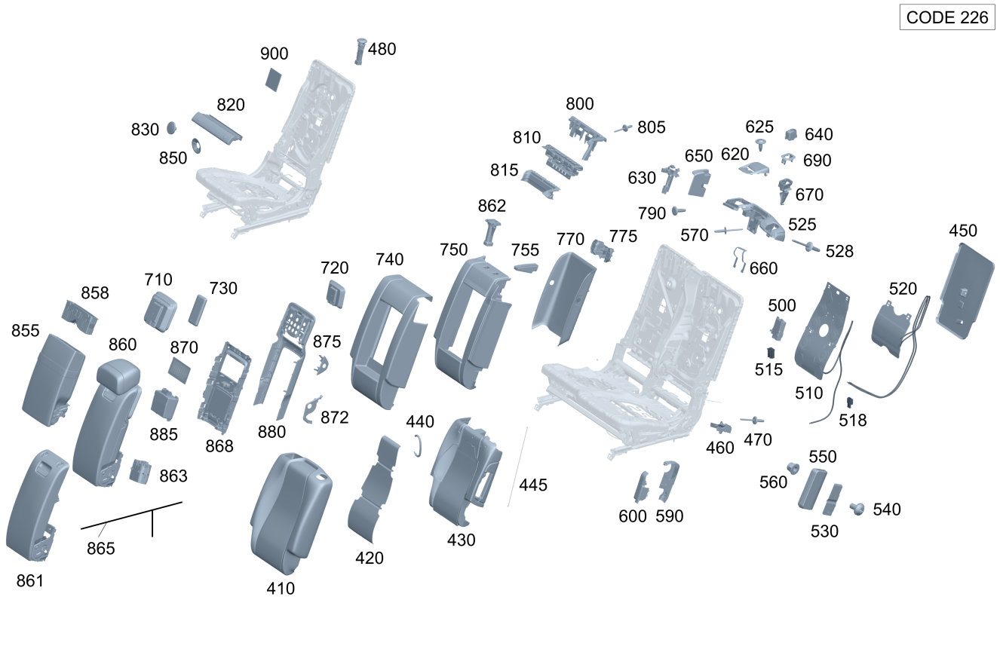

| № | Артикул | Название | Кол. | Примечание | Ограничение |
|---|---|---|---|---|---|
| 410 | A 167 920 55 15 | Обивка спинки сиденья | 1 | Спинка заднего сиденья слева | (550A/850A)+226+(809/800/801)+-453 |
| 410 | A 167 920 57 15 | Обивка спинки сиденья (BEZUG FONDLEHNE) | 1 | Спинка заднего сиденья слева | (550A/850A)+226+293+(809/800/801)+-453 |
| 410 | A 167 920 50 21 | Обивка спинки сиденья | 1 | Спинка заднего сиденья слева | (550A/850A)+226+(802/803)+-453 |
| 410 | A 167 920 50 21 | Обивка спинки сиденья | 1 | Спинка заднего сиденья слева | 550A+226+(804/805/806)+-453 |
| 410 | A 167 920 57 21 | Обивка спинки сиденья (BEZUG FONDLEHNE) | 1 | Спинка заднего сиденья слева | (550A/850A)+226+293+(802/803)+-453 |
| 410 | A 167 920 57 21 | Обивка спинки сиденья (BEZUG FONDLEHNE) | 1 | Спинка заднего сиденья слева | 550A+226+293+(804/805/806)+-453 |
| 410 | A 167 920 62 16 | Обивка спинки сиденья (BEZUG FONDLEHNE) | 1 | Спинка заднего сиденья слева | 560A+226+(809/800/801)+-453 |
| 410 | A 167 920 67 16 | Обивка спинки сиденья (BEZUG FONDLEHNE) | 1 | Спинка заднего сиденья слева | 560A+226+293+(809/800/801)+-453 |
| 410 | A 167 920 52 21 | Обивка спинки сиденья | 1 | Спинка заднего сиденья слева | 560A+226+(802/803/804/805/806)+-453 |
| 410 | A 167 920 60 21 | Обивка спинки сиденья (BEZUG FONDLEHNE) | 1 | Спинка заднего сиденья слева | 560A+226+293+(802/803/804/805/806)+-453 |
| 410 | A 167 920 62 16 | Обивка спинки сиденья (BEZUG FONDLEHNE) | 1 | Спинка заднего сиденья слева | 560A+565A+226+(802/803/804/805/806)+-453 |
| 410 | A 167 920 67 16 | Обивка спинки сиденья (BEZUG FONDLEHNE) | 1 | Спинка заднего сиденья слева | (560A+565A/960A)+226+293+(802/803/804/805/806)+-453 |
| 410 | A 167 920 85 05 | Обивка спинки сиденья (BEZUG FONDLEHNE) | 1 | Спинка заднего сиденья слева | 110A+226+(809/800/801/802+-052)+-224 |
| 410 | A 167 920 99 22 | Обивка спинки сиденья | 1 | Спинка заднего сиденья слева | 110A+226+(802+052/803)+-224 |
| 410 | A 167 920 99 22 | Обивка спинки сиденья | 1 | Спинка заднего сиденья слева | 110A+226+-(809/800/801/802/803/224) |
| 410 | A 167 920 87 05 | Обивка спинки сиденья (BEZUG FONDLEHNE) | 1 | Спинка заднего сиденья слева | 110A+226+293+(809/800/801/802+-052)+-224 |
| 410 | A 167 920 95 22 | Обивка спинки сиденья | 1 | Спинка заднего сиденья слева | 110A+226+293+(802+052/803)+-224 |
| 410 | A 167 920 95 22 | Обивка спинки сиденья | 1 | Спинка заднего сиденья слева | 110A+226+293+-(809/800/801/802/803/224) |
| 410 | A 167 920 91 27 | Обивка спинки сиденья | 1 | Спинка заднего сиденья слева | 140A+226+(807/808/29X)+-224 |
| 410 | A 167 920 88 27 | Обивка спинки сиденья | 1 | Спинка заднего сиденья слева | 140A+226+293+(807/808/29X)+-224 |
| 410 | A 167 920 53 03 | Обивка спинки сиденья (BEZUG FONDLEHNE) | 1 | Спинка заднего сиденья слева | 200A+226+(809/800/801/802+-052)+-453 |
| 410 | A 167 920 87 20 | Обивка спинки сиденья | 1 | Спинка заднего сиденья слева | 200A+226+(802+052/803)+-453 |
| 410 | A 167 920 87 20 | Обивка спинки сиденья | 1 | Спинка заднего сиденья слева | 200A+226+-(809/800/801/802/803/453) |
| 410 | A 167 920 83 26 | Обивка спинки сиденья | 1 | Спинка заднего сиденья слева | 230A+226+(807/808/29X)+-453 |
| 410 | A 167 920 85 11 | Обивка спинки сиденья (BEZUG FONDLEHNE) | 1 | Спинка заднего сиденья слева | 200A+(205A/215A)+226+(809/800/801/802+-052)+-453 |
| 410 | A 167 920 89 20 | Обивка спинки сиденья (BEZUG FONDLEHNE) | 1 | Спинка заднего сиденья слева | 200A+215A+226+(802+052/803)+-453 |
| 410 | A 167 920 89 20 | Обивка спинки сиденья (BEZUG FONDLEHNE) | 1 | Спинка заднего сиденья слева | 200A+(215A/225A)+226+-(809/800/801/802/803/453) |
| 410 | A 167 920 85 26 | Обивка спинки сиденья | 1 | Спинка заднего сиденья слева | 230A+235A+226+(807/808/29X)+-453 |
| 410 | A 167 920 95 01 | Обивка спинки сиденья (BEZUG FONDLEHNE) | 1 | Спинка заднего сиденья слева | 200A+226+293+(809/800/801/802+-052)+-453 |
| 410 | A 167 920 91 20 | Обивка спинки сиденья (BEZUG FONDLEHNE) | 1 | Спинка заднего сиденья слева | 200A+226+293+(802+052/803)+-453 |
| 410 | A 167 920 91 20 | Обивка спинки сиденья (BEZUG FONDLEHNE) | 1 | Спинка заднего сиденья слева | 200A+226+293+-(809/800/801/802/803/453) |
| 410 | A 167 920 73 26 | Обивка спинки сиденья | 1 | Спинка заднего сиденья слева | 230A+226+293+(807/808/29X)+-453 |
| 410 | A 167 920 87 11 | Обивка спинки сиденья (BEZUG FONDLEHNE) | 1 | Спинка заднего сиденья слева | 200A+(205A/215A)+226+293+(809/800/801/802+-052)+-453 |
| 410 | A 167 920 93 20 | Обивка спинки сиденья (BEZUG FONDLEHNE) | 1 | Спинка заднего сиденья слева | 200A+215A+226+293+(802+052/803)+-453 |
| 410 | A 167 920 93 20 | Обивка спинки сиденья (BEZUG FONDLEHNE) | 1 | Спинка заднего сиденья слева | 200A+(215A/225A)+226+293+-(809/800/801/802/803/453) |
| 410 | A 167 920 75 26 | Обивка спинки сиденья | 1 | Спинка заднего сиденья слева | 230A+235A+226+293+(807/808/29X)+-453 |
| 410 | A 167 920 93 17 | Обивка спинки сиденья (BEZUG FONDLEHNE) | 1 | Спинка заднего сиденья слева | 200A+226+293+(402/(402+406))+P08+(809/800/801/802+-052)+-453 |
| 410 | A 167 920 17 21 | Обивка спинки сиденья (BEZUG FONDLEHNE) | 1 | Спинка заднего сиденья слева | 200A+226+293+(402/(402+406))+P08+(802+052/803)+-453 |
| 410 | A 167 920 17 21 | Обивка спинки сиденья (BEZUG FONDLEHNE) | 1 | Спинка заднего сиденья слева | 200A+226+293+(402/(402+406))+P08+-(809/800/801/802/803/453) |
| 410 | A 167 920 65 26 | Обивка спинки сиденья | 1 | Спинка заднего сиденья слева | 230A+226+293+(402+406)+395+(807/808/29X)+-453 |
| 410 | A 167 920 95 17 | Обивка спинки сиденья (BEZUG FONDLEHNE) | 1 | Спинка заднего сиденья слева | 200A+(205A/215A)+226+293+(402/(402+406))+P08+(809/800/801/802+-052)+-453 |
| 410 | A 167 920 19 21 | Обивка спинки сиденья (BEZUG FONDLEHNE) | 1 | Спинка заднего сиденья слева | 200A+215A+226+293+(402/(402+406))+P08+(802+052/803)+-453 |
| 410 | A 167 920 19 21 | Обивка спинки сиденья (BEZUG FONDLEHNE) | 1 | Спинка заднего сиденья слева | 200A+(215A/225A)+226+293+(402+406)+P08+-(809/800/801/802/803/453) |
| 410 | A 167 920 67 26 | Обивка спинки сиденья | 1 | Спинка заднего сиденья слева | 230A+235A+226+293+(402+406)+395+(807/808/29X)+-453 |
| 410 | A 167 920 17 02 | Обивка спинки сиденья (BEZUG FONDLEHNE) | 1 | Спинка заднего сиденья слева | 500A+226+293+(809/800/801/802+-052)+-453 |
| 410 | A 167 920 95 20 | Обивка спинки сиденья (BEZUG FONDLEHNE) | 1 | Спинка заднего сиденья слева | (500A/940A)+226+293+(802+052/803)+-453 |
| 410 | A 167 920 95 20 | Обивка спинки сиденья (BEZUG FONDLEHNE) | 1 | Спинка заднего сиденья слева | (500A/940A)+226+293+(804/805/806)+-453 |
| 410 | A 167 920 13 27 | Обивка спинки сиденья | 1 | Спинка заднего сиденья слева | (500A/940A)+226+293+(807/808/29X)+-453 |
| 410 | A 167 920 37 25 | Обивка спинки сиденья | 1 | Спинка заднего сиденья слева | 570A+226+(807/808/29X)+-453 |
| 410 | A 167 920 38 25 | Обивка спинки сиденья | 1 | Спинка заднего сиденья слева | 570A+226+293+(807/808/29X)+-453 |
| 410 | A 167 920 42 25 | Обивка спинки сиденья | 1 | Спинка заднего сиденья слева | 580A+226+(807/808/29X)+-453 |
| 410 | A 167 920 44 25 | Обивка спинки сиденья | 1 | Спинка заднего сиденья слева | 580A+226+293+(807/808/29X)+-453 |
| 410 | A 167 920 44 25 | Обивка спинки сиденья | 1 | Спинка заднего сиденья слева | 980A+226+293+(807/808/29X)+-453 |
| 410 | A 167 920 56 15 | Обивка спинки сиденья | 1 | Спинка заднего сиденья справа | (550A/850A)+226+(809/800/801)+-453 |
| 410 | A 167 920 58 15 | Обивка спинки сиденья (BEZUG FONDLEHNE) | 1 | Спинка заднего сиденья справа | (550A/850A)+226+293+(809/800/801)+-453 |
| 410 | A 167 920 73 21 | Обивка спинки сиденья | 1 | Спинка заднего сиденья справа | (550A/850A)+226+(802/803)+-453 |
| 410 | A 167 920 73 21 | Обивка спинки сиденья | 1 | Спинка заднего сиденья справа | 550A+226+(804/805/806)+-453 |
| 410 | A 167 920 80 21 | Обивка спинки сиденья (BEZUG FONDLEHNE) | 1 | Спинка заднего сиденья справа | (550A/850A)+226+293+(802/803)+-453 |
| 410 | A 167 920 80 21 | Обивка спинки сиденья (BEZUG FONDLEHNE) | 1 | Спинка заднего сиденья справа | 550A+226+293+(804/805/806)+-453 |
| 410 | A 167 920 88 16 | Обивка спинки сиденья (BEZUG FONDLEHNE) | 1 | Спинка заднего сиденья справа | 560A+226+(809/800/801)+-453 |
| 410 | A 167 920 93 16 | Обивка спинки сиденья (BEZUG FONDLEHNE) | 1 | Спинка заднего сиденья справа | 560A+226+293+(809/800/801)+-453 |
| 410 | A 167 920 76 21 | Обивка спинки сиденья (BEZUG FONDLEHNE) | 1 | Спинка заднего сиденья справа | 560A+226+(802/803/804/805/806)+-453 |
| 410 | A 167 920 83 21 | Обивка спинки сиденья (BEZUG FONDLEHNE) | 1 | Спинка заднего сиденья справа | 560A+226+293+(802/803/804/805/806)+-453 |
| 410 | A 167 920 88 16 | Обивка спинки сиденья (BEZUG FONDLEHNE) | 1 | Спинка заднего сиденья справа | 560A+565A+226+(802/803/804/805/806)+-453 |
| 410 | A 167 920 93 16 | Обивка спинки сиденья (BEZUG FONDLEHNE) | 1 | Спинка заднего сиденья справа | (560A+565A/960A)+226+293+(802/803/804/805/806)+-453 |
| 410 | A 167 920 86 05 | Обивка спинки сиденья (BEZUG FONDLEHNE) | 1 | Спинка заднего сиденья справа | 110A+226+(809/800/801/802+-052)+-224 |
| 410 | A 167 920 08 23 | Обивка спинки сиденья (BEZUG FONDLEHNE) | 1 | Спинка заднего сиденья справа | 110A+226+(802+052/803)+-224 |
| 410 | A 167 920 08 23 | Обивка спинки сиденья (BEZUG FONDLEHNE) | 1 | Спинка заднего сиденья справа | 110A+226+-(809/800/801/802/803/224) |
| 410 | A 167 920 88 05 | Обивка спинки сиденья (BEZUG FONDLEHNE) | 1 | Спинка заднего сиденья справа | 110A+226+293+(809/800/801/802+-052)+-224 |
| 410 | A 167 920 04 23 | Обивка спинки сиденья (BEZUG FONDLEHNE) | 1 | Спинка заднего сиденья справа | 110A+226+293+(802+052/803)+-224 |
| 410 | A 167 920 04 23 | Обивка спинки сиденья (BEZUG FONDLEHNE) | 1 | Спинка заднего сиденья справа | 110A+226+293+-(809/800/801/802/803/224) |
| 410 | A 167 920 73 27 | Обивка спинки сиденья | 1 | Спинка заднего сиденья справа | 140A+226+(807/808/29X)+-224 |
| 410 | A 167 920 70 27 | Обивка спинки сиденья | 1 | Спинка заднего сиденья справа | 140A+226+293+(807/808/29X)+-224 |
| 410 | A 167 920 54 03 | Обивка спинки сиденья (BEZUG FONDLEHNE) | 1 | Спинка заднего сиденья справа | 200A+226+(809/800/801/802+-052)+-453 |
| 410 | A 167 920 88 20 | Обивка спинки сиденья | 1 | Спинка заднего сиденья справа | 200A+226+(802+052/803)+-453 |
| 410 | A 167 920 88 20 | Обивка спинки сиденья | 1 | Спинка заднего сиденья справа | 200A+226+-(809/800/801/802/803/453) |
| 410 | A 167 920 84 26 | Обивка спинки сиденья | 1 | Спинка заднего сиденья справа | 230A+226+(807/808/29X)+-453 |
| 410 | A 167 920 86 11 | Обивка спинки сиденья (BEZUG FONDLEHNE) | 1 | Спинка заднего сиденья справа | 200A+(205A/215A)+226+(809/800/801/802+-052)+-453 |
| 410 | A 167 920 90 20 | Обивка спинки сиденья (BEZUG FONDLEHNE) | 1 | Спинка заднего сиденья справа | 200A+215A+226+(802+052/803)+-453 |
| 410 | A 167 920 90 20 | Обивка спинки сиденья (BEZUG FONDLEHNE) | 1 | Спинка заднего сиденья справа | 200A+(215A/225A)+226+-(809/800/801/802/803/453) |
| 410 | A 167 920 86 26 | Обивка спинки сиденья | 1 | Спинка заднего сиденья справа | 230A+235A+226+(807/808/29X)+-453 |
| 410 | A 167 920 96 01 | Обивка спинки сиденья (BEZUG FONDLEHNE) | 1 | Спинка заднего сиденья справа | 200A+226+293+(809/800/801/802+-052)+-453 |
| 410 | A 167 920 92 20 | Обивка спинки сиденья (BEZUG FONDLEHNE) | 1 | Спинка заднего сиденья справа | 200A+226+293+(802+052/803)+-453 |
| 410 | A 167 920 92 20 | Обивка спинки сиденья (BEZUG FONDLEHNE) | 1 | Спинка заднего сиденья справа | 200A+226+293+-(809/800/801/802/803/453) |
| 410 | A 167 920 72 26 | Обивка спинки сиденья | 1 | Спинка заднего сиденья справа | 230A+226+293+(807/808/29X)+-453 |
| 410 | A 167 920 88 11 | Обивка спинки сиденья (BEZUG FONDLEHNE) | 1 | Спинка заднего сиденья справа | 200A+(205A/215A)+226+293+(809/800/801/802+-052)+-453 |
| 410 | A 167 920 94 20 | Обивка спинки сиденья (BEZUG FONDLEHNE) | 1 | Спинка заднего сиденья справа | 200A+215A+226+293+(802+052/803)+-453 |
| 410 | A 167 920 94 20 | Обивка спинки сиденья (BEZUG FONDLEHNE) | 1 | Спинка заднего сиденья справа | 200A+(215A/225A)+226+293+-(809/800/801/802/803/453) |
| 410 | A 167 920 74 26 | Обивка спинки сиденья | 1 | Спинка заднего сиденья справа | 230A+235A+226+293+(807/808/29X)+-453 |
| 410 | A 167 920 96 17 | Обивка спинки сиденья (BEZUG FONDLEHNE) | 1 | Спинка заднего сиденья справа | 200A+(205A/215A)+226+293+(402/(402+406))+P08+(809/800/801/802+-052)+-453 |
| 410 | A 167 920 20 21 | Обивка спинки сиденья (BEZUG FONDLEHNE) | 1 | Спинка заднего сиденья справа | 200A+215A+226+293+(402/(402+406))+P08+(802+052/803)+-453 |
| 410 | A 167 920 20 21 | Обивка спинки сиденья (BEZUG FONDLEHNE) | 1 | Спинка заднего сиденья справа | 200A+(215A/225A)+226+293+(402/(402+406))+P08+-(809/800/801/802/803/453) |
| 410 | A 167 920 68 26 | Обивка спинки сиденья | 1 | Спинка заднего сиденья справа | 230A+235A+226+293+(402+406)+395+(807/808/29X)+-453 |
| 410 | A 167 920 94 17 | Обивка спинки сиденья (BEZUG FONDLEHNE) | 1 | Спинка заднего сиденья справа | 200A+226+293+(402/(402+406))+P08+(809/800/801/802+-052)+-453 |
| 410 | A 167 920 18 21 | Обивка спинки сиденья (BEZUG FONDLEHNE) | 1 | Спинка заднего сиденья справа | 200A+226+293+(402/(402+406))+P08+(802+052/803)+-453 |
| 410 | A 167 920 18 21 | Обивка спинки сиденья (BEZUG FONDLEHNE) | 1 | Спинка заднего сиденья справа | 200A+226+293+(402/(402+406))+P08+-(809/800/801/802/803/453) |
| 410 | A 167 920 66 26 | Обивка спинки сиденья | 1 | Спинка заднего сиденья справа | 230A+226+293+(402+406)+395+(807/808/29X)+-453 |
| 410 | A 167 920 18 02 | Обивка спинки сиденья (BEZUG FONDLEHNE) | 1 | Спинка заднего сиденья справа | 500A+226+293+(809/800/801/802+-052)+-453 |
| 410 | A 167 920 96 20 | Обивка спинки сиденья (BEZUG FONDLEHNE) | 1 | Спинка заднего сиденья справа | (500A/940A)+226+293+(802+052/803)+-453 |
| 410 | A 167 920 96 20 | Обивка спинки сиденья (BEZUG FONDLEHNE) | 1 | Спинка заднего сиденья справа | (500A/940A)+226+293+(804/805/806)+-453 |
| 410 | A 167 920 14 27 | Обивка спинки сиденья | 1 | Спинка заднего сиденья справа | (500A/940A)+226+293+(807/808/29X)+-453 |
| 410 | A 167 920 69 25 | Обивка спинки сиденья | 1 | Спинка заднего сиденья справа | 570A+226+(807/808/29X)+-453 |
| 410 | A 167 920 71 25 | Обивка спинки сиденья | 1 | Спинка заднего сиденья справа | 570A+226+293+(807/808/29X)+-453 |
| 410 | A 167 920 73 25 | Обивка спинки сиденья | 1 | Спинка заднего сиденья справа | 580A+226+(807/808/29X)+-453 |
| 410 | A 167 920 75 25 | Обивка спинки сиденья | 1 | Спинка заднего сиденья справа | 580A+226+293+(807/808/29X)+-453 |
| 410 | A 167 920 75 25 | Обивка спинки сиденья | 1 | Спинка заднего сиденья справа | 980A+226+293+(807/808/29X) |
| 420 | A 167 906 69 00 | Подогрев сидений (SITZHEIZUNG) | 1 | Спинка заднего сиденья слева [402] БОЛЬШЕ НЕ ПОСТАВЛЯЕТСЯ | (226+872/226+402)+-453 |
| 420 | A 167 906 78 00 | Подогрев сидений (SITZHEIZUNG) | 1 | Спинка заднего сиденья слева | (226+872/226+402)+-453 |
| 420 | A 167 906 50 07 | Подогрев сидений (SITZHEIZUNG) | 1 | Спинка заднего сиденья слева | (226+872/226+402)+-453 |
| 420 | A 167 906 40 11 | Подогрев сидений (SITZHEIZUNG) | 1 | Спинка заднего сиденья слева | (226+872/226+402)+(807/808/29X)+-453 |
| 420 | A 167 906 69 00 | Подогрев сидений (SITZHEIZUNG) | 1 | Спинка заднего сиденья справа [402] БОЛЬШЕ НЕ ПОСТАВЛЯЕТСЯ | (226+872/226+402)+-453 |
| 420 | A 167 906 78 00 | Подогрев сидений (SITZHEIZUNG) | 1 | Спинка заднего сиденья справа | (226+872/226+402)+-453 |
| 420 | A 167 906 50 07 | Подогрев сидений (SITZHEIZUNG) | 1 | Спинка заднего сиденья справа | (226+872/226+402)+-453 |
| 420 | A 167 906 40 11 | Подогрев сидений (SITZHEIZUNG) | 1 | Спинка заднего сиденья справа | (226+872/226+402)+(807/808/29X)+-453 |
| 430 | A 167 920 95 14 | Накладка спинки сиденья (AUFLAGE FONDLEHNE) | 1 | Спинка заднего сиденья слева | 226+-(453/402) |
| 430 | A 167 920 01 15 | Накладка спинки сиденья (AUFLAGE FONDLEHNE) | 1 | Спинка заднего сиденья слева | 226+293+-(453/402) |
| 430 | A 167 920 69 17 | Накладка спинки сиденья (AUFLAGE FONDLEHNE) | 1 | Спинка заднего сиденья слева | 226+402+P08+-(453) |
| 430 | A 167 920 71 17 | Накладка спинки сиденья (AUFLAGE FONDLEHNE) | 1 | Спинка заднего сиденья слева | 226+402+406+P08+-(453) |
| 430 | A 167 920 71 17 | Накладка спинки сиденья (AUFLAGE FONDLEHNE) | 1 | Спинка заднего сиденья слева | 226+293+402+406+P08+-(453) |
| 430 | A 167 920 96 14 | Накладка спинки сиденья (AUFLAGE FONDLEHNE) | 1 | Спинка заднего сиденья справа | 226+-(453/402) |
| 430 | A 167 920 02 15 | Накладка спинки сиденья (AUFLAGE FONDLEHNE) | 1 | Спинка заднего сиденья справа | 226+293+-(453/402) |
| 430 | A 167 920 70 17 | Накладка спинки сиденья (AUFLAGE FONDLEHNE) | 1 | Спинка заднего сиденья справа | 226+402+P08+-(453) |
| 430 | A 167 920 72 17 | Накладка спинки сиденья (AUFLAGE FONDLEHNE) | 1 | Спинка заднего сиденья справа | 226+402+406+P08+-(453) |
| 430 | A 167 920 72 17 | Накладка спинки сиденья (AUFLAGE FONDLEHNE) | 1 | Спинка заднего сиденья справа | 226+293+402+406+P08+-(453) |
| 440 | A 463 984 00 61 | Крепежная скоба (BEFESTIGUNGSKLAMMER) | 13 | КРЕПЛЕНИЕ СПИНКИ СЛЕВА | 226+-453 |
| 440 | A 463 984 00 61 | Крепежная скоба (BEFESTIGUNGSKLAMMER) | 14 | КРЕПЛЕНИЕ СПИНКИ СЛЕВА | 226+-453 |
| 440 | A 463 984 00 61 | Крепежная скоба (BEFESTIGUNGSKLAMMER) | 13 | КРЕПЛЕНИЕ СПИНКИ СПРАВА | 226+-453 |
| 440 | A 463 984 00 61 | Крепежная скоба (BEFESTIGUNGSKLAMMER) | 14 | КРЕПЛЕНИЕ СПИНКИ СПРАВА | 226+-453 |
| 445 | A 167 914 30 00 | Подвесной хомут (EINHAENGEBUEGEL) | 2 | КРЕПЛЕНИЕ ОБИВКИ К РАМЕ СПИНКИ СЛЕВА | (224/226)+-453 |
| 445 | A 167 914 30 00 | Подвесной хомут (EINHAENGEBUEGEL) | 2 | КРЕПЛЕНИЕ ОБИВКИ К РАМЕ СПИНКИ СПРАВА | (224/226)+-453 |
| 450 | A 167 924 11 00 | Обивка спинки сиденья (BELAG FONDLEHNE) | 1 | Спинка заднего сиденья слева | 224/226+-453 |
| 450 | A 296 924 03 00 | Обивка спинки сиденья (BELAG FONDLEHNE) | 1 | Спинка заднего сиденья слева | (226)+-453 |
| 450 | A 167 924 52 00 | Обивка спинки сиденья (BELAG FONDLEHNE) | 1 | ЗАДН.СПИНКА В ЦЕНТРЕ | 226 |
| 450 | A 296 924 07 00 | Обивка спинки сиденья (BELAG FONDLEHNE) | 1 | ЗАДН.СПИНКА В ЦЕНТРЕ | 226 |
| 450 | A 167 924 10 00 | Обивка спинки сиденья (BELAG FONDLEHNE) | 1 | ЗАДН.СПИНКА В ЦЕНТРЕ | 226+(460/494/625) |
| 450 | A 296 924 08 00 | Обивка спинки сиденья (BELAG FONDLEHNE) | 1 | ЗАДН.СПИНКА В ЦЕНТРЕ | 226+(460/494/625) |
| 450 | A 296 924 08 00 | Обивка спинки сиденья (BELAG FONDLEHNE) | 1 | ЗАДН.СПИНКА В ЦЕНТРЕ | 226+(460/494/625/834) |
| 450 | A 167 924 12 00 | Обивка спинки сиденья (BELAG FONDLEHNE) | 1 | Спинка заднего сиденья справа | (224/226)+-453 |
| 450 | A 296 924 04 00 | Обивка спинки сиденья (BELAG FONDLEHNE) | 1 | Спинка заднего сиденья справа | (224/226)+-453 |
| 460 | A 167 920 93 04 | Ручка разблокировки (ENTRIEGELUNGSGRIFF) | 1 | Сиденье слева, снаружи | (224/226)+-453 |
| 460 | A 167 920 10 09 | Ручка разблокировки (ENTRIEGELUNGSGRIFF) | 1 | Сиденье справа, снаружи | (224/226)+-453 |
| 470 | A 000 991 91 32 | Вытяжная заклепка (BLINDNIET) | 2 | КРЕПЛЕНИЕ ЛЕВОЙ РУЧКИ РАЗБЛОКИРОВКИ | (226/224)+(809/800/801/802/803/804/805/806)+-453 |
| 470 | A 000 991 91 32 | Вытяжная заклепка (BLINDNIET) | 2 | КРЕПЛЕНИЕ ПРАВОЙ РУЧКИ РАЗБЛОКИРОВКИ | (226/224)+(809/800/801/802/803/804/805/806)+-453 |
| 480 | A 167 970 63 00 | Направляющая подголовника (KOPFSTUETZENFUEHRUNG) | 1 | С разблокировкой посередине | 226+-P08 |
| 480 | A 167 970 62 00 | Направляющая подголовника (KOPFSTUETZENFUEHRUNG) | 3 | Без разблокировки левого сиденья | 226+-453 |
| 480 | A 167 970 62 00 | Направляющая подголовника (KOPFSTUETZENFUEHRUNG) | 2 | Без разблокировки левого сиденья | 226+P08+-453 |
| 480 | A 167 970 62 00 | Направляющая подголовника (KOPFSTUETZENFUEHRUNG) | 2 | Без разблокировки левого сиденья | 226+(P08/395)+-453 |
| 480 | A 167 970 62 00 | Направляющая подголовника (KOPFSTUETZENFUEHRUNG) | 2 | Без разблокировки правого сиденья | (224/226)+-453 |
| 500 | A 167 900 05 00 | Блок управления (STEUERGERAET) | 1 | Левое сиденье, сзади [697] ДЕТАЛЬ ПОСТАВЛЯЕТСЯ ТОЛЬКО/ИЛИ ТАКЖЕ КАК ЗАП.ЧАСТЬ | 903+(809/800+-050) |
| 500 | A 167 900 59 08 | Блок управления (STEUERGERAET) | 1 | Левое сиденье, сзади [672] ДЕТАЛЬ ПОСЛЕ УСТАН.ПРОВЕРИТЬ НА АКТУАЛЬНОСТЬ "ПРОШИВНОГО" ПО [697] ДЕТАЛЬ ПОСТАВЛЯЕТСЯ ТОЛЬКО/ИЛИ ТАКЖЕ КАК ЗАП.ЧАСТЬ | 903+(800+050) |
| 500 | A 167 900 88 12 | Блок управления (STEUERGERAET) | 1 | Левое сиденье, сзади [697] ДЕТАЛЬ ПОСТАВЛЯЕТСЯ ТОЛЬКО/ИЛИ ТАКЖЕ КАК ЗАП.ЧАСТЬ | 903+(800+050) |
| 500 | A 167 900 88 12 | Блок управления (STEUERGERAET) | 1 | Левое сиденье, сзади [697] ДЕТАЛЬ ПОСТАВЛЯЕТСЯ ТОЛЬКО/ИЛИ ТАКЖЕ КАК ЗАП.ЧАСТЬ | 903+(801/802/803) |
| 500 | A 167 900 33 20 | Блок управления (STEUERGERAET) | 1 | Левое сиденье, сзади | (804/805/806)+903 |
| 500 | A 167 900 05 00 | Блок управления (STEUERGERAET) | 1 | Правое сиденье, сзади [697] ДЕТАЛЬ ПОСТАВЛЯЕТСЯ ТОЛЬКО/ИЛИ ТАКЖЕ КАК ЗАП.ЧАСТЬ | 903+(809/800+-050) |
| 500 | A 167 900 59 08 | Блок управления (STEUERGERAET) | 1 | Правое сиденье, сзади [672] ДЕТАЛЬ ПОСЛЕ УСТАН.ПРОВЕРИТЬ НА АКТУАЛЬНОСТЬ "ПРОШИВНОГО" ПО [697] ДЕТАЛЬ ПОСТАВЛЯЕТСЯ ТОЛЬКО/ИЛИ ТАКЖЕ КАК ЗАП.ЧАСТЬ | 903+(800+050) |
| 500 | A 167 900 88 12 | Блок управления (STEUERGERAET) | 1 | Правое сиденье, сзади [697] ДЕТАЛЬ ПОСТАВЛЯЕТСЯ ТОЛЬКО/ИЛИ ТАКЖЕ КАК ЗАП.ЧАСТЬ | 800+050+903 |
| 500 | A 167 900 88 12 | Блок управления (STEUERGERAET) | 1 | Правое сиденье, сзади [697] ДЕТАЛЬ ПОСТАВЛЯЕТСЯ ТОЛЬКО/ИЛИ ТАКЖЕ КАК ЗАП.ЧАСТЬ | 903+(801/802/803) |
| 500 | A 167 900 33 20 | Блок управления (STEUERGERAET) | 1 | Правое сиденье, сзади | (804/805/806)+903 |
| 510 | A 167 800 34 00 | Клапанный блок (VENTILBLOCK) | 1 | Спинка заднего сиденья слева | 406+P08+(809/800/801/802/803/804/805/806)+-M036 |
| 510 | A 167 800 48 00 | Клапанный блок (VENTILBLOCK) | 1 | Спинка заднего сиденья слева | 406+395+(807/808/29X) |
| 510 | A 167 800 34 00 | Клапанный блок (VENTILBLOCK) | 1 | Спинка заднего сиденья справа | 406+P08+(809/800/801/802/803/804/805/806)+-M036 |
| 510 | A 167 800 48 00 | Клапанный блок (VENTILBLOCK) | 1 | Спинка заднего сиденья справа | 406+395+(807/808/29X) |
| 515 | A 038 545 73 28 | - Штекер (STECKER) | 1 | Клапанный блок слева; 4\-PIN MQS | 406+P08 |
| 515 | A 038 545 73 28 | - Штекер (STECKER) | 1 | Клапанный блок слева; 4\-PIN MQS | 406+(P08/395) |
| 515 | A 038 545 73 28 | - Штекер (STECKER) | 1 | Клапанный блок справа; 4\-PIN MQS | 406+P08 |
| 518 | A 056 545 36 28 | - Корпус штекера (STECKERGEHAEUSE) | 1 | Клапанный блок слева; 4\-PIN MQS | 406+P08 |
| 518 | A 056 545 36 28 | - Корпус штекера (STECKERGEHAEUSE) | 1 | Клапанный блок слева; 4\-PIN MQS | 406+(P08/395) |
| 518 | A 056 545 36 28 | - Корпус штекера (STECKERGEHAEUSE) | 1 | Клапанный блок справа; 4\-PIN MQS | 406+P08 |
| 520 | A 167 800 23 00 | Кронштейн (TRAEGER) | 1 | ЗАДНЯЯ СПИНКА ЛЕВАЯ | 406+P08 |
| 520 | A 167 800 23 00 | Кронштейн (TRAEGER) | 1 | ЗАДНЯЯ СПИНКА ЛЕВАЯ | 406+(P08/395) |
| 520 | A 167 800 30 00 | Кронштейн (TRAEGER) | 1 | Спинка заднего сиденья справа | 406+P08 |
| 525 | A 167 923 23 00 | Усиливающий элемент (VERSTAERKUNG) | 1 | Верх, левое сиденье | 226/(567+847)+-453 |
| 525 | A 167 923 23 00 | Усиливающий элемент (VERSTAERKUNG) | 1 | Верх, левое сиденье | 226+-453 |
| 525 | A 167 923 37 00 | Усилитель спинки зад.сид. (VERSTAERKUNG FONDLEHNE) | 1 | Верх, левое сиденье | (226/567+847)+P08+-453 |
| 525 | A 167 923 37 00 | Усилитель спинки зад.сид. (VERSTAERKUNG FONDLEHNE) | 1 | Верх, левое сиденье | 226+P08+-453 |
| 525 | A 167 923 37 00 | Усилитель спинки зад.сид. (VERSTAERKUNG FONDLEHNE) | 1 | Верх, левое сиденье | 226+(P08/395)+-453 |
| 525 | A 167 923 24 00 | Усиливающий элемент (VERSTAERKUNG) | 1 | Верх, правое сиденье | 226/(567+847)+-453 |
| 525 | A 167 923 24 00 | Усиливающий элемент (VERSTAERKUNG) | 1 | СВЕРХУ, ПРАВОЕ СИДЕНЬЕ | 226/(567+847)+-453 |
| 525 | A 167 923 38 00 | Усилитель спинки зад.сид. (VERSTAERKUNG FONDLEHNE) | 1 | Верх, правое сиденье | (226/567+847)+P08+-453 |
| 525 | A 167 923 38 00 | Усилитель спинки зад.сид. (VERSTAERKUNG FONDLEHNE) | 1 | СВЕРХУ, ПРАВОЕ СИДЕНЬЕ | 226+P08+-453 |
| 525 | A 167 923 38 00 | Усилитель спинки зад.сид. (VERSTAERKUNG FONDLEHNE) | 1 | СВЕРХУ, ПРАВОЕ СИДЕНЬЕ | 226+(P08/395)+-453 |
| 528 | A 000 991 91 32 | Вытяжная заклепка (BLINDNIET) | 3 | КРЕПЛЕНИЕ УСИЛИТЕЛЯ СЛЕВА | 226+(809/800/801/802/803/804/805/806)+-453 |
| 528 | A 000 991 91 32 | Вытяжная заклепка (BLINDNIET) | 5 | КРЕПЛЕНИЕ УСИЛИТЕЛЯ СПРАВА | 226+(809/800/801/802/803/804/805/806)+-453 |
| 530 | A 167 920 57 12 | Держатель (HALTER) | 1 | Внешн. (левое сиденье) | (224/226)+293+-453 |
| 530 | A 167 920 58 12 | Держатель (HALTER) | 1 | Внешн. (правое сиденье) | (224/226)+293+-453 |
| 540 | N 000000 007932 | Винт с 6-гр. глвк (SECHSRUNDSCHRAUBE) | 2 | КРОНШТЕЙН ПОДУШКИ БЕЗОПАСНОСТИ НА НАРУЖНОЙ СТОРОНЕ КАРКАСА ЛЕВОГО СИДЕНЬЯ; M6X12 | (224/226)+293+-453 |
| 540 | N 000000 007932 | Винт с 6-гр. глвк (SECHSRUNDSCHRAUBE) | 2 | КРОНШТЕЙН ПОДУШКИ БЕЗОПАСНОСТИ НА НАРУЖНОЙ СТОРОНЕ КАРКАСА ПРАВОГО СИДЕНЬЯ; M6X12 | (224/226)+293+-453 |
| 550 | A 167 860 17 01 | Боковая НПБ (SEITENAIRBAG) | 1 | Левое сиденье, снаружи | (224/226)+293+-453 |
| 550 | A 167 860 18 01 | Боковая НПБ (SEITENAIRBAG) | 1 | НАРУЖНОЕ ПРАВОЕ СИДЕНЬЕ | (224/226)+293+-453 |
| 560 | N 000000 008272 | Гайка (MUTTER) | 1 | КРЕПЛЕНИЕ ЛЕВОЙ БОКОВОЙ ПОДУШКИ БЕЗОПАСНОСТИ; M6 | (224/226)+293+-453 |
| 560 | N 000000 008272 | Гайка (MUTTER) | 1 | КРЕПЛЕНИЕ ПРАВОЙ БОКОВОЙ ПОДУШКИ БЕЗОПАСНОСТИ; M6 | (224/226)+293+-453 |
| 570 | A 000 991 91 32 | Вытяжная заклепка (BLINDNIET) | 1 | КРЕПЛЕНИЕ КРЫШКИ СЛЕВА | 226+(809/800/801/802/803/804/805/806) |
| 570 | A 000 991 91 32 | Вытяжная заклепка (BLINDNIET) | 1 | КРЕПЛЕНИЕ КРЫШКИ СПРАВА | (224/226)+(809/800/801/802/803/804/805/806)+-453 |
| 590 | A 167 921 23 00 | Накладка каркаса сиденья (ABDECKUNG SITZGESTELL) | 1 | КАРКАС СИДЕНЬЯ СЛЕВА,СЗАДИ | 226 |
| 600 | A 167 921 25 00 | Накладка каркаса сиденья (ABDECKUNG SITZGESTELL) | 1 | КАРКАС ЛЕВОГО СИДЕНЬЯ (ВНУТР.) | 226 |
| 620 | A 167 920 12 16 | Накладка спинки сиденья (ABDECKUNG SITZLEHNE) | 1 | В ЦЕНТРЕ ВВЕРХУ | 226/567+847+(110A/200A/500A/550A/560A/600A/650A/800A/850A) |
| 620 | A 167 920 12 16 | Накладка спинки сиденья (ABDECKUNG SITZLEHNE) | 1 | Посередине сверху | 226/567+847+(110A/200A/500A/600A/800A)+(809/800/801/802/803+-053) |
| 620 | A 167 920 12 16 | Накладка спинки сиденья (ABDECKUNG SITZLEHNE) | 1 | Посередине сверху | 226/567+847+(110A/200A/500A/600A/800A)+(803+053/804/805/806) |
| 625 | N 000000 003251 | Винт с 6-гр. глвк (SECHSRUNDSCHRAUBE) | 1 | КРЕПЛЕНИЕ КОЖУХА РАСШИРИТЕЛЬНОГО БАЧКА (ЦЕНТР. ВЕРХН.); M5X12 | 226 |
| 630 | A 167 920 17 16 | Накладка спинки сиденья (ABDECKUNG SITZLEHNE) | 1 | Посередине сверху | 226/567+847+(110A/200A/500A/550A/560A/600A/650A/800A/850A) |
| 630 | A 167 920 17 16 | Накладка спинки сиденья (ABDECKUNG SITZLEHNE) | 1 | Посередине сверху | 226/567+847+(110A/200A/500A/600A/800A)+(809/800/801/802/803+-053) |
| 630 | A 167 920 17 16 | Накладка спинки сиденья (ABDECKUNG SITZLEHNE) | 1 | Посередине сверху | 226/567+847+(110A/200A/500A/600A/800A)+(803+053/804/805/806) |
| 640 | A 167 905 34 02 | Блок выключателей | 1 | Левое сиденье, снаружи | 226+901+-453 |
| 640 | A 167 905 34 02 | Блок выключателей | 1 | Правое сиденье снаружи | (226/224+901)+-453 |
| 650 | A 167 920 10 16 | Облицовка рамы спинки (ABDECKUNG SITZLEHNENRAHM.) | 1 | В ЦЕНТРЕ ВВЕРХУ | 226 |
| 660 | A 167 923 00 14 | Держатель (HALTER) | 1 | Левое сиденье, сзади | (226/(567+847))+(809/800/801/802/803+-053) |
| 660 | A 167 923 00 14 | Держатель (HALTER) | 1 | Левое сиденье, сзади | 226+-(809/800/801/802/803+-053) |
| 670 | A 167 920 51 12 | Накладка спинки сиденья (ABDECKUNG SITZLEHNE) | 1 | Сверху слева | 226+(110A/140A/200A/230A/500A/940A/510A/970A/550A/560A/960A/570A/580A) |
| 670 | A 167 920 51 12 | Накладка спинки сиденья (ABDECKUNG SITZLEHNE) | 1 | Сверху слева | 226 |
| 670 | A 167 920 52 12 | Накладка спинки сиденья (ABDECKUNG SITZLEHNE) | 1 | Сверху справа | (224/226)+(110A/140A/200A/230A/500A/940A/510A/970A/550A/560A/960A/570A/580A) |
| 670 | A 167 920 52 12 | Накладка спинки сиденья (ABDECKUNG SITZLEHNE) | 1 | Сверху справа | 224/226 |
| 690 | A 167 920 65 12 | Накладка спинки сиденья (ABDECKUNG SITZLEHNE) | 1 | СВЕРХУ, ЛЕВОЕ СИДЕНЬЕ | 226 |
| 690 | A 167 920 65 12 | Накладка спинки сиденья (ABDECKUNG SITZLEHNE) | 1 | СВЕРХУ, ПРАВОЕ СИДЕНЬЕ | (224/226)+-453 |
| 710 | A 167 900 18 11 | Блок управления (STEUERGERAET) | 1 | Посередине сверху [672] ДЕТАЛЬ ПОСЛЕ УСТАН.ПРОВЕРИТЬ НА АКТУАЛЬНОСТЬ "ПРОШИВНОГО" ПО | 447+(809/800+-050)+-(P08/224) |
| 710 | A 167 900 38 14 | Блок управления (STEUERGERAET) | 1 | Посередине сверху [672] ДЕТАЛЬ ПОСЛЕ УСТАН.ПРОВЕРИТЬ НА АКТУАЛЬНОСТЬ "ПРОШИВНОГО" ПО [697] ДЕТАЛЬ ПОСТАВЛЯЕТСЯ ТОЛЬКО/ИЛИ ТАКЖЕ КАК ЗАП.ЧАСТЬ | 447+(800+050/801/802)+-(P08/224) |
| 710 | A 167 900 48 22 | Блок управления (STEUERGERAET) | 1 | Посередине сверху [672] ДЕТАЛЬ ПОСЛЕ УСТАН.ПРОВЕРИТЬ НА АКТУАЛЬНОСТЬ "ПРОШИВНОГО" ПО [697] ДЕТАЛЬ ПОСТАВЛЯЕТСЯ ТОЛЬКО/ИЛИ ТАКЖЕ КАК ЗАП.ЧАСТЬ | 447+(803/804+-054)+-(P08/224) |
| 710 | A 167 900 00 29 | Блок управления (STEUERGERAET) | 1 | Посередине сверху [672] ДЕТАЛЬ ПОСЛЕ УСТАН.ПРОВЕРИТЬ НА АКТУАЛЬНОСТЬ "ПРОШИВНОГО" ПО | 447+(804+054/805/806)+-(P08/224) |
| 710 | A 167 900 48 22 | Блок управления (STEUERGERAET) | 1 | Посередине сверху [672] ДЕТАЛЬ ПОСЛЕ УСТАН.ПРОВЕРИТЬ НА АКТУАЛЬНОСТЬ "ПРОШИВНОГО" ПО [697] ДЕТАЛЬ ПОСТАВЛЯЕТСЯ ТОЛЬКО/ИЛИ ТАКЖЕ КАК ЗАП.ЧАСТЬ | 447+(804+054/805/806)+-(P08/224) |
| 710 | A 167 900 81 36 | Блок управления | 1 | Посередине сверху [672] ДЕТАЛЬ ПОСЛЕ УСТАН.ПРОВЕРИТЬ НА АКТУАЛЬНОСТЬ "ПРОШИВНОГО" ПО | 447+(807/808/29X)+-(P08/224) |
| 710 | A 167 900 18 11 | Блок управления (STEUERGERAET) | 1 | Посередине сверху [672] ДЕТАЛЬ ПОСЛЕ УСТАН.ПРОВЕРИТЬ НА АКТУАЛЬНОСТЬ "ПРОШИВНОГО" ПО | 447+224+(809/800+-050)+-P08 |
| 710 | A 167 900 38 14 | Блок управления (STEUERGERAET) | 1 | Посередине сверху [672] ДЕТАЛЬ ПОСЛЕ УСТАН.ПРОВЕРИТЬ НА АКТУАЛЬНОСТЬ "ПРОШИВНОГО" ПО [697] ДЕТАЛЬ ПОСТАВЛЯЕТСЯ ТОЛЬКО/ИЛИ ТАКЖЕ КАК ЗАП.ЧАСТЬ | 447+224+(800+050/801/802)+-P08 |
| 710 | A 167 900 48 22 | Блок управления (STEUERGERAET) | 1 | Посередине сверху [672] ДЕТАЛЬ ПОСЛЕ УСТАН.ПРОВЕРИТЬ НА АКТУАЛЬНОСТЬ "ПРОШИВНОГО" ПО [697] ДЕТАЛЬ ПОСТАВЛЯЕТСЯ ТОЛЬКО/ИЛИ ТАКЖЕ КАК ЗАП.ЧАСТЬ | 447+224+(803/804+-054)+-P08 |
| 710 | A 167 900 00 29 | Блок управления (STEUERGERAET) | 1 | Посередине сверху [672] ДЕТАЛЬ ПОСЛЕ УСТАН.ПРОВЕРИТЬ НА АКТУАЛЬНОСТЬ "ПРОШИВНОГО" ПО | 447+224+(804+054/805/806)+-P08 |
| 710 | A 167 900 48 22 | Блок управления (STEUERGERAET) | 1 | Посередине сверху [672] ДЕТАЛЬ ПОСЛЕ УСТАН.ПРОВЕРИТЬ НА АКТУАЛЬНОСТЬ "ПРОШИВНОГО" ПО [697] ДЕТАЛЬ ПОСТАВЛЯЕТСЯ ТОЛЬКО/ИЛИ ТАКЖЕ КАК ЗАП.ЧАСТЬ | 447+224+(804+054/805/806)+-P08 |
| 710 | A 167 900 81 36 | Блок управления | 1 | Посередине сверху [672] ДЕТАЛЬ ПОСЛЕ УСТАН.ПРОВЕРИТЬ НА АКТУАЛЬНОСТЬ "ПРОШИВНОГО" ПО | 447+224+(807/808/29X)+-P08 |
| 710 | A 167 900 18 11 | Блок управления (STEUERGERAET) | 1 | Посередине сверху [672] ДЕТАЛЬ ПОСЛЕ УСТАН.ПРОВЕРИТЬ НА АКТУАЛЬНОСТЬ "ПРОШИВНОГО" ПО | 447+(809/800+-050)+-M036 |
| 710 | A 167 900 38 14 | Блок управления (STEUERGERAET) | 1 | Посередине сверху [672] ДЕТАЛЬ ПОСЛЕ УСТАН.ПРОВЕРИТЬ НА АКТУАЛЬНОСТЬ "ПРОШИВНОГО" ПО [697] ДЕТАЛЬ ПОСТАВЛЯЕТСЯ ТОЛЬКО/ИЛИ ТАКЖЕ КАК ЗАП.ЧАСТЬ | 447+(800+050/801/802)+-M036 |
| 710 | A 167 900 48 22 | Блок управления (STEUERGERAET) | 1 | Посередине сверху [672] ДЕТАЛЬ ПОСЛЕ УСТАН.ПРОВЕРИТЬ НА АКТУАЛЬНОСТЬ "ПРОШИВНОГО" ПО [697] ДЕТАЛЬ ПОСТАВЛЯЕТСЯ ТОЛЬКО/ИЛИ ТАКЖЕ КАК ЗАП.ЧАСТЬ | 447+(803/804+-054)+-M036 |
| 710 | A 167 900 00 29 | Блок управления (STEUERGERAET) | 1 | Посередине сверху [672] ДЕТАЛЬ ПОСЛЕ УСТАН.ПРОВЕРИТЬ НА АКТУАЛЬНОСТЬ "ПРОШИВНОГО" ПО | 447+(804+054/805/806)+-M036 |
| 710 | A 167 900 48 22 | Блок управления (STEUERGERAET) | 1 | Посередине сверху [672] ДЕТАЛЬ ПОСЛЕ УСТАН.ПРОВЕРИТЬ НА АКТУАЛЬНОСТЬ "ПРОШИВНОГО" ПО [697] ДЕТАЛЬ ПОСТАВЛЯЕТСЯ ТОЛЬКО/ИЛИ ТАКЖЕ КАК ЗАП.ЧАСТЬ | 447+(804+054/805/806)+-M036 |
| 710 | A 167 900 81 36 | Блок управления | 1 | Посередине сверху [672] ДЕТАЛЬ ПОСЛЕ УСТАН.ПРОВЕРИТЬ НА АКТУАЛЬНОСТЬ "ПРОШИВНОГО" ПО | 447+(807/808/29X)+-M036 |
| 710 | A 167 900 79 34 | Блок управления | 1 | Посередине сверху [672] ДЕТАЛЬ ПОСЛЕ УСТАН.ПРОВЕРИТЬ НА АКТУАЛЬНОСТЬ "ПРОШИВНОГО" ПО | 816+-M036 |
| 710 | A 167 900 38 39 | Блок управления (STEUERGERAET) | 1 | Посередине сверху [672] ДЕТАЛЬ ПОСЛЕ УСТАН.ПРОВЕРИТЬ НА АКТУАЛЬНОСТЬ "ПРОШИВНОГО" ПО | 816+-M036 |
| 720 | A 167 900 22 12 | Блок управления (STEUERGERAET) | 1 | Устройство индикации | 447+-P08 |
| 720 | A 167 900 64 15 | Блок управления (STEUERGERAET) | 1 | Устройство индикации | 447+-P08 |
| 720 | A 167 900 10 20 | Блок управления (STEUERGERAET) | 1 | Устройство индикации [414] СТАРУЮ ДЕТАЛЬ УСТАНАВЛИВАТЬ БОЛЬШЕ НЕ РАЗРЕШАЕТСЯ | 447+-P08 |
| 720 | A 167 900 40 22 | Блок управления (STEUERGERAET) | 1 | Устройство индикации [414] СТАРУЮ ДЕТАЛЬ УСТАНАВЛИВАТЬ БОЛЬШЕ НЕ РАЗРЕШАЕТСЯ | 447+-P08 |
| 720 | A 167 900 53 23 | Блок управления (STEUERGERAET) | 1 | Устройство индикации | 447+-P08 |
| 720 | A 167 900 76 25 | Блок управления (STEUERGERAET) | 1 | Устройство индикации | 447+-P08 |
| 720 | A 223 900 15 08 | Блок управления (STEUERGERAET) | 1 | Устройство индикации | 447+-P08 |
| 720 | A 223 900 61 36 | Блок управления (STEUERGERAET) | 1 | Устройство индикации | 447+-(P08/830) |
| 720 | A 167 900 23 12 | Блок управления (STEUERGERAET) | 1 | Устройство индикации Рулевое управление: Влево | 447+830+-P08 |
| 720 | A 167 900 65 15 | Блок управления (STEUERGERAET) | 1 | Устройство индикации Рулевое управление: Влево | 447+830+-P08 |
| 720 | A 167 900 11 20 | Блок управления (STEUERGERAET) | 1 | Устройство индикации Рулевое управление: Влево [414] СТАРУЮ ДЕТАЛЬ УСТАНАВЛИВАТЬ БОЛЬШЕ НЕ РАЗРЕШАЕТСЯ | 447+830+-P08 |
| 720 | A 167 900 41 22 | Блок управления (STEUERGERAET) | 1 | Устройство индикации Рулевое управление: Влево [697] ДЕТАЛЬ ПОСТАВЛЯЕТСЯ ТОЛЬКО/ИЛИ ТАКЖЕ КАК ЗАП.ЧАСТЬ | 447+830+-P08 |
| 720 | A 167 900 54 23 | Блок управления (STEUERGERAET) | 1 | Устройство индикации Рулевое управление: Влево [697] ДЕТАЛЬ ПОСТАВЛЯЕТСЯ ТОЛЬКО/ИЛИ ТАКЖЕ КАК ЗАП.ЧАСТЬ | 447+830+-P08 |
| 720 | A 167 900 77 25 | Блок управления (STEUERGERAET) | 1 | Устройство индикации Рулевое управление: Влево | 447+830+-P08 |
| 720 | A 223 900 16 08 | Блок управления (STEUERGERAET) | 1 | Устройство индикации Рулевое управление: Влево | 447+830+-P08 |
| 720 | A 223 900 62 36 | Блок управления (STEUERGERAET) | 1 | Устройство индикации Рулевое управление: Влево | 447+830+-P08 |
| 720 | A 167 900 24 12 | Блок управления (STEUERGERAET) | 1 | Устройство индикации Рулевое управление: Влево | 447+524L+-P08 |
| 720 | A 167 900 66 15 | Блок управления (STEUERGERAET) | 1 | Устройство индикации Рулевое управление: Влево [414] СТАРУЮ ДЕТАЛЬ УСТАНАВЛИВАТЬ БОЛЬШЕ НЕ РАЗРЕШАЕТСЯ | 447+524L+-P08 |
| 720 | A 167 900 12 20 | Блок управления (STEUERGERAET) | 1 | Устройство индикации Рулевое управление: Влево | 447+524L+-P08 |
| 720 | A 167 900 20 21 | Блок управления (STEUERGERAET) | 1 | Устройство индикации Рулевое управление: Влево [414] СТАРУЮ ДЕТАЛЬ УСТАНАВЛИВАТЬ БОЛЬШЕ НЕ РАЗРЕШАЕТСЯ | 447+524L+-P08 |
| 720 | A 167 900 42 22 | Блок управления (STEUERGERAET) | 1 | Устройство индикации Рулевое управление: Влево [414] СТАРУЮ ДЕТАЛЬ УСТАНАВЛИВАТЬ БОЛЬШЕ НЕ РАЗРЕШАЕТСЯ | 447+524L+-P08 |
| 720 | A 167 900 55 23 | Блок управления (STEUERGERAET) | 1 | Устройство индикации Рулевое управление: Влево | 447+524L+-P08 |
| 720 | A 167 900 78 25 | Блок управления (STEUERGERAET) | 1 | Устройство индикации Рулевое управление: Влево | 447+524L+-P08 |
| 720 | A 223 900 61 36 | Блок управления (STEUERGERAET) | 1 | Устройство индикации Рулевое управление: Влево | 447+524L+-P08 |
| 720 | A 223 900 15 08 | Блок управления (STEUERGERAET) | 1 | Устройство индикации | 447+(804/805/806)+-P08 |
| 720 | A 223 900 61 36 | Блок управления (STEUERGERAET) | 1 | Устройство индикации | 447+(804/805/806)+-P08 |
| 720 | A 223 900 90 38 | Блок управления (STEUERGERAET) | 1 | Устройство индикации | 447+(804/805/806)+-(P08/830) |
| 720 | A 223 900 07 40 | Блок управления (STEUERGERAET) | 1 | Устройство индикации | 447+(804/805/806)+-(P08/830) |
| 720 | A 223 900 24 43 | Блок управления (STEUERGERAET) | 1 | Устройство индикации | 447+(804/805/806)+-(P08/830) |
| 720 | A 223 900 64 44 | Блок управления (STEUERGERAET) | 1 | Устройство индикации | 447+(804/805/806)+-(P08/830) |
| 720 | A 223 900 15 08 | Блок управления (STEUERGERAET) | 1 | Устройство индикации Рулевое управление: Влево | 447+524L+(804/805/806)+-P08 |
| 720 | A 223 900 61 36 | Блок управления (STEUERGERAET) | 1 | Устройство индикации Рулевое управление: Влево | 447+524L+(804/805/806)+-P08 |
| 720 | A 223 900 16 08 | Блок управления (STEUERGERAET) | 1 | Устройство индикации Рулевое управление: Влево | 447+830+(804/805/806)+-P08 |
| 720 | A 223 900 62 36 | Блок управления (STEUERGERAET) | 1 | Устройство индикации Рулевое управление: Влево | 447+830+(804/805/806)+-P08 |
| 720 | A 223 900 91 38 | Блок управления (STEUERGERAET) | 1 | Устройство индикации Рулевое управление: Влево | 447+830+(804/805/806)+-P08 |
| 720 | A 167 900 22 12 | Блок управления (STEUERGERAET) | 1 | Устройство индикации | 447+(809/800/801/802/803)+-M036 |
| 720 | A 167 900 64 15 | Блок управления (STEUERGERAET) | 1 | Устройство индикации | 447+(809/800/801/802/803)+-M036 |
| 720 | A 167 900 10 20 | Блок управления (STEUERGERAET) | 1 | Устройство индикации [414] СТАРУЮ ДЕТАЛЬ УСТАНАВЛИВАТЬ БОЛЬШЕ НЕ РАЗРЕШАЕТСЯ | 447+(809/800/801/802/803)+-M036 |
| 720 | A 167 900 40 22 | Блок управления (STEUERGERAET) | 1 | Устройство индикации [414] СТАРУЮ ДЕТАЛЬ УСТАНАВЛИВАТЬ БОЛЬШЕ НЕ РАЗРЕШАЕТСЯ | 447+(809/800/801/802/803)+-M036 |
| 720 | A 167 900 53 23 | Блок управления (STEUERGERAET) | 1 | Устройство индикации | 447+(809/800/801/802/803)+-M036 |
| 720 | A 167 900 76 25 | Блок управления (STEUERGERAET) | 1 | Устройство индикации | 447+(809/800/801/802/803)+-M036 |
| 720 | A 223 900 15 08 | Блок управления (STEUERGERAET) | 1 | Устройство индикации | 447+(809/800/801/802/803)+-M036 |
| 720 | A 223 900 61 36 | Блок управления (STEUERGERAET) | 1 | Устройство индикации | 447+(809/800/801/802/803)+-M036 |
| 720 | A 167 900 23 12 | Блок управления (STEUERGERAET) | 1 | Устройство индикации Рулевое управление: Влево [414] СТАРУЮ ДЕТАЛЬ УСТАНАВЛИВАТЬ БОЛЬШЕ НЕ РАЗРЕШАЕТСЯ | 447+830+(809/800/801/802/803)+-M036 |
| 720 | A 167 900 65 15 | Блок управления (STEUERGERAET) | 1 | Устройство индикации Рулевое управление: Влево | 447+830+(809/800/801/802/803)+-M036 |
| 720 | A 167 900 11 20 | Блок управления (STEUERGERAET) | 1 | Устройство индикации Рулевое управление: Влево [414] СТАРУЮ ДЕТАЛЬ УСТАНАВЛИВАТЬ БОЛЬШЕ НЕ РАЗРЕШАЕТСЯ | 447+830+(809/800/801/802/803)+-M036 |
| 720 | A 167 900 41 22 | Блок управления (STEUERGERAET) | 1 | Устройство индикации Рулевое управление: Влево [697] ДЕТАЛЬ ПОСТАВЛЯЕТСЯ ТОЛЬКО/ИЛИ ТАКЖЕ КАК ЗАП.ЧАСТЬ | 447+830+(809/800/801/802/803)+-M036 |
| 720 | A 167 900 54 23 | Блок управления (STEUERGERAET) | 1 | Устройство индикации Рулевое управление: Влево [697] ДЕТАЛЬ ПОСТАВЛЯЕТСЯ ТОЛЬКО/ИЛИ ТАКЖЕ КАК ЗАП.ЧАСТЬ | 447+830+(809/800/801/802/803)+-M036 |
| 720 | A 167 900 77 25 | Блок управления (STEUERGERAET) | 1 | Устройство индикации Рулевое управление: Влево | 447+830+(809/800/801/802/803)+-M036 |
| 720 | A 223 900 16 08 | Блок управления (STEUERGERAET) | 1 | Устройство индикации Рулевое управление: Влево | 447+830+(809/800/801/802/803)+-M036 |
| 720 | A 223 900 62 36 | Блок управления (STEUERGERAET) | 1 | Устройство индикации Рулевое управление: Влево | 447+830+(809/800/801/802/803)+-M036 |
| 720 | A 167 900 24 12 | Блок управления (STEUERGERAET) | 1 | Устройство индикации Рулевое управление: Влево [414] СТАРУЮ ДЕТАЛЬ УСТАНАВЛИВАТЬ БОЛЬШЕ НЕ РАЗРЕШАЕТСЯ | 447+524L+(809/800/801/802/803)+-M036 |
| 720 | A 167 900 66 15 | Блок управления (STEUERGERAET) | 1 | Устройство индикации Рулевое управление: Влево [414] СТАРУЮ ДЕТАЛЬ УСТАНАВЛИВАТЬ БОЛЬШЕ НЕ РАЗРЕШАЕТСЯ | 447+524L+(809/800/801/802/803)+-M036 |
| 720 | A 167 900 12 20 | Блок управления (STEUERGERAET) | 1 | Устройство индикации Рулевое управление: Влево [414] СТАРУЮ ДЕТАЛЬ УСТАНАВЛИВАТЬ БОЛЬШЕ НЕ РАЗРЕШАЕТСЯ | 447+524L+(809/800/801/802/803)+-M036 |
| 720 | A 167 900 42 22 | Блок управления (STEUERGERAET) | 1 | Устройство индикации Рулевое управление: Влево [414] СТАРУЮ ДЕТАЛЬ УСТАНАВЛИВАТЬ БОЛЬШЕ НЕ РАЗРЕШАЕТСЯ | 447+524L+(809/800/801/802/803)+-M036 |
| 720 | A 167 900 55 23 | Блок управления (STEUERGERAET) | 1 | Устройство индикации Рулевое управление: Влево | 447+524L+(809/800/801/802/803)+-M036 |
| 720 | A 167 900 78 25 | Блок управления (STEUERGERAET) | 1 | Устройство индикации Рулевое управление: Влево | 447+524L+(809/800/801/802/803)+-M036 |
| 720 | A 223 900 61 36 | Блок управления (STEUERGERAET) | 1 | Устройство индикации Рулевое управление: Влево | 447+524L+(809/800/801/802/803)+-M036 |
| 720 | A 223 900 90 38 | Блок управления (STEUERGERAET) | 1 | Устройство индикации | 447+(804/805/806)+-M036 |
| 720 | A 223 900 07 40 | Блок управления (STEUERGERAET) | 1 | Устройство индикации | 447+(804/805/806)+-M036 |
| 720 | A 223 900 24 43 | Блок управления (STEUERGERAET) | 1 | Устройство индикации | 447+(804/805/806)+-M036 |
| 720 | A 223 900 64 44 | Блок управления (STEUERGERAET) | 1 | Устройство индикации | 447+(804/805/806)+-M036 |
| 720 | A 223 900 15 08 | Блок управления (STEUERGERAET) | 1 | Устройство индикации Рулевое управление: Влево | 447+524L+(804/805/806)+-M036 |
| 720 | A 223 900 61 36 | Блок управления (STEUERGERAET) | 1 | Устройство индикации Рулевое управление: Влево | 447+524L+(804/805/806)+-M036 |
| 720 | A 223 900 91 38 | Блок управления (STEUERGERAET) | 1 | Устройство индикации Рулевое управление: Влево | 447+830+(804/805/806)+-M036 |
| 720 | A 223 900 08 40 | Блок управления (STEUERGERAET) | 1 | Устройство индикации Рулевое управление: Влево | 447+(830/823L/824L)+(804/805/806)+-M036 |
| 720 | A 223 900 25 43 | Блок управления (STEUERGERAET) | 1 | Устройство индикации Рулевое управление: Влево | 447+(830/823L/824L)+(804/805/806)+-M036 |
| 720 | A 223 900 65 44 | Блок управления (STEUERGERAET) | 1 | Устройство индикации Рулевое управление: Влево | 447+(830/823L/824L)+(804/805/806)+-M036 |
| 730 | A 223 900 16 54 | Блок управления (STEUERGERAET) | 2 | Планшетный компьютер (центральный модуль Comand) | (816+226)+-M036 |
| 740 | A 167 920 89 05 | Обивка спинки сиденья (BEZUG FONDLEHNE) | 1 | Каркас спинки (задняя сторона) | (110A/140A)+226 |
| 740 | A 167 920 85 17 | Обивка спинки сиденья (BEZUG FONDLEHNE) | 1 | Каркас спинки (задняя сторона) | 110A+226+P08 |
| 740 | A 167 920 19 19 | Обивка спинки сиденья (BEZUG FONDLEHNE) | 1 | Каркас спинки (задняя сторона) | 110A+226+P08 |
| 740 | A 167 920 16 21 | Обивка спинки сиденья (BEZUG FONDLEHNE) | 1 | Каркас спинки (задняя сторона) | 110A+226+P08 |
| 740 | A 167 920 16 21 | Обивка спинки сиденья (BEZUG FONDLEHNE) | 1 | Каркас спинки (задняя сторона) | (110A/140A)+226+(P08/395) |
| 740 | A 167 920 97 01 | Обивка спинки сиденья (BEZUG FONDLEHNE) | 1 | Каркас спинки (задняя сторона) | 200A+226+-(224/453) |
| 740 | A 167 920 08 26 | Обивка спинки сиденья | 1 | Каркас спинки (задняя сторона) | 230A+226+(807/808/29X)+-(224/453) |
| 740 | A 167 920 82 11 | Обивка спинки сиденья (BEZUG FONDLEHNE) | 1 | Каркас спинки (задняя сторона) | 200A+(205A/215A)+226+-(224/453) |
| 740 | A 167 920 82 11 | Обивка спинки сиденья (BEZUG FONDLEHNE) | 1 | Каркас спинки (задняя сторона) | 200A+(215A/225A)+226+-(224/453) |
| 740 | A 167 920 07 26 | Обивка спинки сиденья | 1 | Каркас спинки (задняя сторона) | 230A+235A+226+(807/808/29X)+-(224/453) |
| 740 | A 167 920 86 17 | Обивка спинки сиденья (BEZUG FONDLEHNE) | 1 | Каркас спинки (задняя сторона) | 200A+226+P08+-(224/453) |
| 740 | A 167 920 20 19 | Обивка спинки сиденья (BEZUG FONDLEHNE) | 1 | Каркас спинки (задняя сторона) | 200A+226+P08+-(224/453) |
| 740 | A 167 920 22 21 | Обивка спинки сиденья (BEZUG FONDLEHNE) | 1 | Каркас спинки (задняя сторона) | 200A+226+P08+-(224/453) |
| 740 | A 167 920 03 26 | Обивка спинки сиденья | 1 | Каркас спинки (задняя сторона) | 230A+226+395+(807/808/29X)+-(224/453) |
| 740 | A 167 920 87 17 | Обивка спинки сиденья (BEZUG FONDLEHNE) | 1 | Каркас спинки (задняя сторона) | 200A+205A+226+P08+-(224/453) |
| 740 | A 167 920 21 19 | Обивка спинки сиденья (BEZUG FONDLEHNE) | 1 | Каркас спинки (задняя сторона) | 200A+(205A/215A)+226+P08+-(224/453) |
| 740 | A 167 920 24 21 | Обивка спинки сиденья (BEZUG FONDLEHNE) | 1 | Каркас спинки (задняя сторона) | 200A+215A+226+P08+-(224/453) |
| 740 | A 167 920 24 21 | Обивка спинки сиденья (BEZUG FONDLEHNE) | 1 | Каркас спинки (задняя сторона) | 200A+(215A/225A)+226+P08+-(224/453) |
| 740 | A 167 920 04 26 | Обивка спинки сиденья | 1 | Каркас спинки (задняя сторона) | 230A+235A+226+395+(807/808/29X)+-(224/453) |
| 740 | A 167 920 19 02 | Обивка спинки сиденья (BEZUG FONDLEHNE) | 1 | Каркас спинки (задняя сторона) | (500A/550A/560A/850A)+226+-224 |
| 740 | A 167 920 19 02 | Обивка спинки сиденья (BEZUG FONDLEHNE) | 1 | Каркас спинки (задняя сторона) | (500A/550A/560A/850A)+226+-224 |
| 740 | A 167 920 85 25 | Обивка спинки сиденья | 1 | Каркас спинки (задняя сторона) | 500A+226+(807/808/29X)+-224 |
| 740 | A 167 920 85 25 | Обивка спинки сиденья | 1 | Каркас спинки (задняя сторона) | (570A/580A/870A)+226+(807/808)+-224 |
| 740 | A 167 920 88 17 | Обивка спинки сиденья (BEZUG FONDLEHNE) | 1 | Каркас спинки (задняя сторона) | (500A/550A/560A/850A)+226+P08+-224 |
| 740 | A 167 920 22 19 | Обивка спинки сиденья (BEZUG FONDLEHNE) | 1 | Каркас спинки (задняя сторона) | (500A/550A/560A/850A)+226+P08+-224 |
| 740 | A 167 920 31 21 | Обивка спинки сиденья (BEZUG FONDLEHNE) | 1 | Каркас спинки (задняя сторона) | (500A/550A/560A/850A/940A/960A)+226+P08+-224 |
| 740 | A 167 920 31 21 | Обивка спинки сиденья (BEZUG FONDLEHNE) | 1 | Каркас спинки (задняя сторона) | (500A/550A/560A/940A/960A)+226+P08+-224 |
| 740 | A 167 920 86 25 | Обивка спинки сиденья | 1 | Каркас спинки (задняя сторона) | 500A+226+395+(807/808/29X)+-224 |
| 740 | A 167 920 86 25 | Обивка спинки сиденья | 1 | Каркас спинки (задняя сторона) | (570A/580A/870A)+226+395+(807/808)+-224 |
| 740 | A 167 920 86 25 | Обивка спинки сиденья | 1 | Каркас спинки (задняя сторона) | (940A/980A)+226+395+(807/808)+-224 |
| 750 | A 167 920 00 16 | Накладка спинки сиденья (AUFLAGE FONDLEHNE) | 1 | ЗАДН.СПИНКА В ЦЕНТРЕ | 226 |
| 750 | A 167 920 94 08 | Накладка спинки сиденья (AUFLAGE FONDLEHNE) | 1 | ЗАДН.СПИНКА В ЦЕНТРЕ | 226+(110A/200A/500A/550A/560A/850A)+P08 |
| 750 | A 167 920 05 19 | Накладка спинки сиденья (AUFLAGE FONDLEHNE) | 1 | ЗАДН.СПИНКА В ЦЕНТРЕ | 226+P08 |
| 750 | A 167 920 05 19 | Накладка спинки сиденья (AUFLAGE FONDLEHNE) | 1 | ЗАДН.СПИНКА В ЦЕНТРЕ | 226+(P08/395) |
| 755 | A 167 923 39 00 | Усилитель спинки зад.сид. (VERSTAERKUNG FONDLEHNE) | 1 | ЗАДН.СПИНКА В ЦЕНТРЕ | P08+226 |
| 755 | A 167 923 39 00 | Усилитель спинки зад.сид. (VERSTAERKUNG FONDLEHNE) | 1 | ЗАДН.СПИНКА В ЦЕНТРЕ | (P08/395)+226 |
| 770 | A 167 920 39 02 | Облицовка рамы спинки (ABDECKUNG SITZLEHNENRAHM.) | 1 | РАМА СПИНКИ (ЦЕНТР. СЕКЦИЯ) | 226 |
| 770 | A 167 920 04 09 | Облицовка рамы спинки (ABDECKUNG SITZLEHNENRAHM.) | 1 | РАМА СПИНКИ (ЦЕНТР. СЕКЦИЯ) | 226+P08 |
| 770 | A 167 920 04 09 | Облицовка рамы спинки (ABDECKUNG SITZLEHNENRAHM.) | 1 | РАМА СПИНКИ (ЦЕНТР. СЕКЦИЯ) | 226+(P08/395) |
| 775 | A 167 920 65 29 | Облицовка рамы спинки | 1 | (567/226)+(807/808/29X) | |
| 790 | A 001 984 43 29 | Винт Torx с полукр. гол. (LINSENKOPFSCHRAUBE M. ISR) | 2 | КРЕПЛЕНИЕ ПОДЛОКОТНИКА К РАМЕ СПИНКИ (ЦЕНТРАЛЬН.); M6X14 | 226+-(224/453) |
| 790 | N 000000 002575 | Винт с 6-гр. глвк (SECHSRUNDSCHRAUBE) | 2 | КРЕПЛЕНИЕ ПОДЛОКОТНИКА К РАМЕ СПИНКИ (ЦЕНТРАЛЬН.); M8X16 | 226+(P08/395)+-(224/453) |
| 800 | A 167 923 25 00 | Усиливающий элемент (VERSTAERKUNG) | 1 | Сверху посередине | (226/(567+847)+(809/800/801/802/803+-053))+-P08 |
| 800 | A 167 923 25 00 | Усиливающий элемент (VERSTAERKUNG) | 1 | Сверху посередине | 226+-(809/800/801/802/803+-053/P08) |
| 805 | A 000 991 91 32 | Вытяжная заклепка (BLINDNIET) | 3 | КРЕПЛЕНИЕ ЭЛЕМЕНТА ЖЁСТКОСТИ В ЦЕНТРЕ | 226+(809/800/801/802/803/804/805/806)+-P08 |
| 810 | A 167 923 29 00 | Усилитель спинки зад.сид. (VERSTAERKUNG FONDLEHNE) | 1 | В ЦЕНТРЕ СВЕРХУ СЗАДИ, СЛЕВА | 226+P08 |
| 815 | A 167 923 28 00 | Усилитель спинки зад.сид. (VERSTAERKUNG FONDLEHNE) | 1 | В ЦЕНТРЕ ВВЕРХУ | 226+P08 |
| 820 | A 167 920 55 14 | Набивка (POLSTER) | 1 | Спинка заднего сиденья слева | 110A+226+(809/800/801/802+-052)+-453 |
| 820 | A 167 920 77 23 | Набивка (POLSTER) | 1 | Спинка заднего сиденья слева | 110A+226+(802+052/803)+-453 |
| 820 | A 167 920 57 14 | Набивка (POLSTER) | 1 | Спинка заднего сиденья слева | 110A+8U8+226+(809/800/801/802+-052)+-453 |
| 820 | A 167 920 79 23 | Набивка | 1 | Спинка заднего сиденья слева | 110A+8U8+226+(802+052/803)+-453 |
| 820 | A 167 920 59 14 | Набивка (POLSTER) | 1 | Спинка заднего сиденья слева | 200A+226+(809/800/801/802/803)+-453 |
| 820 | A 167 920 61 14 | Набивка (POLSTER) | 1 | Спинка заднего сиденья слева | 200A+8U8+226+(809/800/801/802/803)+-453 |
| 820 | A 167 920 63 14 | Набивка (POLSTER) | 1 | Спинка заднего сиденья слева | 200A+(205A/215A/225A)+226+(809/800/801/802/803)+-453 |
| 820 | A 167 920 65 14 | Набивка (POLSTER) | 1 | Спинка заднего сиденья слева | 200A+(205A/215A/225A)+8U8+226+(809/800/801/802/803)+-453 |
| 820 | A 167 920 79 14 | Набивка (POLSTER) | 1 | Спинка заднего сиденья слева | 200A+P08+226+402+(809/800/801/802/803)+-453 |
| 820 | A 167 920 81 14 | Набивка (POLSTER) | 1 | Спинка заднего сиденья слева | 200A+P08+226+402+8U8+(809/800/801/802/803)+-453 |
| 820 | A 167 920 83 14 | Набивка (POLSTER) | 1 | Спинка заднего сиденья слева | 200A+(205A/215A/225A)+P08+226+402+(809/800/801/802/803)+-453 |
| 820 | A 167 920 85 14 | Набивка (POLSTER) | 1 | Спинка заднего сиденья слева | 200A+(205A/215A/225A)+P08+226+402+8U8+(809/800/801/802/803)+-453 |
| 820 | A 167 920 91 18 | Набивка (POLSTER) | 1 | Спинка заднего сиденья слева | (850A/550A/560A)+226+(809/800/801/802/803)+-(453/565A) |
| 820 | A 167 920 93 18 | Набивка (POLSTER) | 1 | Спинка заднего сиденья слева | (850A/550A/560A)+226+8U8+(809/800/801/802/803)+-(453/565A) |
| 820 | A 167 920 77 23 | Набивка (POLSTER) | 1 | Спинка заднего сиденья слева | 110A+226+-(809/800/801/802/803/453) |
| 820 | A 167 920 77 23 | Набивка (POLSTER) | 1 | Спинка заднего сиденья слева | 140A+226+(807/808/29X)+-453 |
| 820 | A 167 920 79 23 | Набивка | 1 | Спинка заднего сиденья слева | 110A+8U8+226+-(809/800/801/802/803/453) |
| 820 | A 167 920 79 23 | Набивка | 1 | Спинка заднего сиденья слева | 140A+8U8+226+(807/808/29X)+-453 |
| 820 | A 167 920 59 14 | Набивка (POLSTER) | 1 | Спинка заднего сиденья слева | 200A+226+-(809/800/801/802/803/453) |
| 820 | A 167 920 59 14 | Набивка (POLSTER) | 1 | Спинка заднего сиденья слева | 230A+226+(807/808/29X)+-453 |
| 820 | A 167 920 61 14 | Набивка (POLSTER) | 1 | Спинка заднего сиденья слева | 200A+8U8+226+-(809/800/801/802/803/453) |
| 820 | A 167 920 61 14 | Набивка (POLSTER) | 1 | Спинка заднего сиденья слева | 230A+8U8+226+(807/808/29X)+-453 |
| 820 | A 167 920 63 14 | Набивка (POLSTER) | 1 | Спинка заднего сиденья слева | 200A+(215A/225A)+226+-(809/800/801/802/803/453) |
| 820 | A 167 920 63 14 | Набивка (POLSTER) | 1 | Спинка заднего сиденья слева | 230A+235A+226+(807/808/29X)+-453 |
| 820 | A 167 920 65 14 | Набивка (POLSTER) | 1 | Спинка заднего сиденья слева | 200A+(215A/225A)+8U8+226+-(809/800/801/802/803/453) |
| 820 | A 167 920 65 14 | Набивка (POLSTER) | 1 | Спинка заднего сиденья слева | 230A+235A+8U8+226+(807/808/29X)+-453 |
| 820 | A 167 920 75 14 | Набивка (POLSTER) | 1 | Спинка заднего сиденья слева | 500A+226+-453 |
| 820 | A 167 920 75 14 | Набивка (POLSTER) | 1 | Спинка заднего сиденья слева | (570A/580A/870A)+226+(807/808/29X)+-453 |
| 820 | A 167 920 77 14 | Набивка (POLSTER) | 1 | Спинка заднего сиденья слева | 500A+8U8+226+-453 |
| 820 | A 167 920 77 14 | Набивка (POLSTER) | 1 | Спинка заднего сиденья слева | (570A/580A/870A)+8U8+226+(807/808/29X)+-453 |
| 820 | A 167 920 79 14 | Набивка (POLSTER) | 1 | Спинка заднего сиденья слева | 200A+P08+226+402+-(809/800/801/802/803/453) |
| 820 | A 167 920 79 14 | Набивка (POLSTER) | 1 | Спинка заднего сиденья слева | 230A+395+226+402+(807/808/29X)+-453 |
| 820 | A 167 920 81 14 | Набивка (POLSTER) | 1 | Спинка заднего сиденья слева | 200A+P08+226+402+8U8+-(809/800/801/802/803/453) |
| 820 | A 167 920 81 14 | Набивка (POLSTER) | 1 | Спинка заднего сиденья слева | 230A+395+226+402+8U8+(807/808/29X)+-453 |
| 820 | A 167 920 83 14 | Набивка (POLSTER) | 1 | Спинка заднего сиденья слева | 200A+(215A/225A)+P08+226+402+-(809/800/801/802/803/453) |
| 820 | A 167 920 83 14 | Набивка (POLSTER) | 1 | Спинка заднего сиденья слева | 230A+235A+395+226+402+(807/808/29X)+-453 |
| 820 | A 167 920 85 14 | Набивка (POLSTER) | 1 | Спинка заднего сиденья слева | 200A+(215A/225A)+P08+226+402+8U8+-(809/800/801/802/803/453) |
| 820 | A 167 920 85 14 | Набивка (POLSTER) | 1 | Спинка заднего сиденья слева | 230A+235A+395+226+402+8U8+(807/808/29X)+-453 |
| 820 | A 167 920 91 18 | Набивка (POLSTER) | 1 | Спинка заднего сиденья слева | (550A/560A)+226+-(809/800/801/802/803/453) |
| 820 | A 167 920 93 18 | Набивка (POLSTER) | 1 | Спинка заднего сиденья слева | (550A/560A)+226+8U8+-(809/800/801/802/803/453) |
| 820 | A 167 920 93 19 | Набивка (POLSTER) | 1 | Спинка заднего сиденья слева | 560A+565A+226+-453 |
| 820 | A 167 920 95 19 | Набивка (POLSTER) | 1 | Спинка заднего сиденья слева | 560A+565A+226+8U8+-453 |
| 820 | A 167 920 75 14 | Набивка (POLSTER) | 1 | Спинка заднего сиденья слева | 940A+226+-453 |
| 820 | A 167 920 77 14 | Набивка (POLSTER) | 1 | Спинка заднего сиденья слева | 940A+8U8+226+-453 |
| 820 | A 167 920 93 19 | Набивка (POLSTER) | 1 | Спинка заднего сиденья слева | 960A+226+-453 |
| 820 | A 167 920 95 19 | Набивка (POLSTER) | 1 | Спинка заднего сиденья слева | 960A+8U8+226+-453 |
| 820 | A 167 920 75 14 | Набивка (POLSTER) | 1 | Спинка заднего сиденья слева | (940A/980A)+226+(807/808)+-453 |
| 820 | A 167 920 77 14 | Набивка (POLSTER) | 1 | Спинка заднего сиденья слева | (940A/980A)+8U8+226+(807/808)+-453 |
| 820 | A 167 920 56 14 | Набивка (POLSTER) | 1 | Спинка заднего сиденья справа | 110A+226+(809/800/801/802+-052)+-453 |
| 820 | A 167 920 78 23 | Набивка (POLSTER) | 1 | Спинка заднего сиденья справа | 110A+226+(802+052/803)+-453 |
| 820 | A 167 920 78 23 | Набивка (POLSTER) | 1 | Спинка заднего сиденья справа | 110A+226+-(809/800/801/802/803/453) |
| 820 | A 167 920 78 23 | Набивка (POLSTER) | 1 | Спинка заднего сиденья справа | 140A+226+(807/808/29X)+-453 |
| 820 | A 167 920 58 14 | Набивка | 1 | Спинка заднего сиденья справа | 110A+8U8+226+(809/800/801/802+-052)+-453 |
| 820 | A 167 920 80 23 | Набивка | 1 | Спинка заднего сиденья справа | 110A+8U8+226+(802+052/803)+-453 |
| 820 | A 167 920 80 23 | Набивка | 1 | Спинка заднего сиденья справа | 110A+8U8+226+-(809/800/801/802/803/453) |
| 820 | A 167 920 80 23 | Набивка | 1 | Спинка заднего сиденья справа | 140A+8U8+226+(807/808/29X)+-453 |
| 820 | A 167 920 60 14 | Набивка (POLSTER) | 1 | Спинка заднего сиденья справа | 200A+226+-453 |
| 820 | A 167 920 60 14 | Набивка (POLSTER) | 1 | Спинка заднего сиденья справа | 230A+226+(807/808/29X)+-453 |
| 820 | A 167 920 62 14 | Набивка | 1 | Спинка заднего сиденья справа | 200A+8U8+226+-453 |
| 820 | A 167 920 62 14 | Набивка | 1 | Спинка заднего сиденья справа | 230A+8U8+226+(807/808/29X)+-453 |
| 820 | A 167 920 64 14 | Набивка (POLSTER) | 1 | Спинка заднего сиденья справа | 200A+(205A/215A/225A)+226+-453 |
| 820 | A 167 920 64 14 | Набивка (POLSTER) | 1 | Спинка заднего сиденья справа | 230A+235A+226+(807/808/29X)+-453 |
| 820 | A 167 920 66 14 | Набивка | 1 | Спинка заднего сиденья справа | 200A+(205A/215A/225A)+8U8+226+-453 |
| 820 | A 167 920 66 14 | Набивка | 1 | Спинка заднего сиденья справа | 230A+235A+8U8+226+(807/808/29X)+-453 |
| 820 | A 167 920 76 14 | Набивка (POLSTER) | 1 | Спинка заднего сиденья справа | 500A+226+-453 |
| 820 | A 167 920 76 14 | Набивка (POLSTER) | 1 | Спинка заднего сиденья справа | (570A/580A/870A)+226+(807/808)+-453 |
| 820 | A 167 920 78 14 | Набивка (POLSTER) | 1 | Спинка заднего сиденья справа | 500A+8U8+226+-453 |
| 820 | A 167 920 78 14 | Набивка (POLSTER) | 1 | Спинка заднего сиденья справа | (570A/580A/870A)+8U8+226+(807/808)+-453 |
| 820 | A 167 920 80 14 | Набивка (POLSTER) | 1 | Спинка заднего сиденья справа | 200A+P08+226+402+-453 |
| 820 | A 167 920 80 14 | Набивка (POLSTER) | 1 | Спинка заднего сиденья справа | 230A+395+226+402+(807/808/29X)+-453 |
| 820 | A 167 920 82 14 | Набивка | 1 | Спинка заднего сиденья справа | 200A+P08+226+402+8U8+-453 |
| 820 | A 167 920 82 14 | Набивка | 1 | Спинка заднего сиденья справа | 230A+395+226+402+8U8+(807/808/29X)+-453 |
| 820 | A 167 920 84 14 | Набивка (POLSTER) | 1 | Спинка заднего сиденья справа | 200A+(205A/215A/225A)+P08+226+402+-453 |
| 820 | A 167 920 84 14 | Набивка (POLSTER) | 1 | Спинка заднего сиденья справа | 230A+235A+395+226+402+(807/808/29X)+-453 |
| 820 | A 167 920 86 14 | Набивка (POLSTER) | 1 | Спинка заднего сиденья справа | 200A+(205A/215A/225A)+P08+226+402+8U8+-453 |
| 820 | A 167 920 86 14 | Набивка (POLSTER) | 1 | Спинка заднего сиденья справа | 230A+235A+395+226+402+8U8+(807/808/29X)+-453 |
| 820 | A 167 920 92 18 | Набивка (POLSTER) | 1 | Спинка заднего сиденья справа | (850A/550A/560A)+226+-453 |
| 820 | A 167 920 94 18 | Набивка (POLSTER) | 1 | Спинка заднего сиденья справа | (850A/550A/560A)+226+8U8+-453 |
| 820 | A 167 920 94 19 | Набивка (POLSTER) | 1 | Спинка заднего сиденья справа | 560A+565A+226+-453 |
| 820 | A 167 920 96 19 | Набивка (POLSTER) | 1 | Спинка заднего сиденья справа | 560A+565A+226+8U8+-453 |
| 820 | A 167 920 76 14 | Набивка (POLSTER) | 1 | Спинка заднего сиденья справа | 940A+226+-453 |
| 820 | A 167 920 78 14 | Набивка (POLSTER) | 1 | Спинка заднего сиденья справа | 940A+8U8+226+-453 |
| 820 | A 167 920 94 19 | Набивка (POLSTER) | 1 | Спинка заднего сиденья справа | 960A+226+-453 |
| 820 | A 167 920 96 19 | Набивка (POLSTER) | 1 | Спинка заднего сиденья справа | 960A+226+8U8+-453 |
| 820 | A 167 920 76 14 | Набивка (POLSTER) | 1 | Спинка заднего сиденья справа | (940A/980A)+226+(807/808)+-453 |
| 820 | A 167 920 78 14 | Набивка (POLSTER) | 1 | Спинка заднего сиденья справа | (940A/980A)+8U8+226+(807/808)+-453 |
| 830 | A 222 817 00 04 | Плакетка (PLAKETTE) | 2 | КРЕПЛЕНИЕ МЯГКОЙ ОБИВКИ (ЛЕВ.) | 226 |
| 830 | A 222 817 42 00 | Плакетка | 2 | КРЕПЛЕНИЕ МЯГКОЙ ОБИВКИ (ЛЕВ.) | 226+8U8 |
| 830 | A 222 817 00 04 | Плакетка (PLAKETTE) | 2 | КРЕПЛЕНИЕ МЯГКОЙ ОБИВКИ (ПРАВ.) | 226 |
| 830 | A 222 817 42 00 | Плакетка | 2 | КРЕПЛЕНИЕ МЯГКОЙ ОБИВКИ (ПРАВ.) | 226+8U8 |
| 850 | N 912010 006000 | Стопорная шайба (SICHERUNGSSCHEIBE) | 4 | КРЕПЛЕНИЕ МЯГКОЙ ОБИВКИ (ЛЕВ.); 6 MM | 226 |
| 850 | N 912010 006000 | Стопорная шайба (SICHERUNGSSCHEIBE) | 2 | КРЕПЛЕНИЕ МЯГКОЙ ОБИВКИ (ЛЕВ.); 6 MM | 226+8U8 |
| 850 | N 912010 006000 | Стопорная шайба (SICHERUNGSSCHEIBE) | 4 | КРЕПЛЕНИЕ МЯГКОЙ ОБИВКИ (ПРАВ.); 6 MM | 226 |
| 850 | N 912010 006000 | Стопорная шайба (SICHERUNGSSCHEIBE) | 2 | КРЕПЛЕНИЕ МЯГКОЙ ОБИВКИ (ПРАВ.); 6 MM | 226+8U8 |
| 855 | A 205 970 02 01 | Подлокотник (ARMLEHNE) | 1 | Центральный подлокотник | 110A+226+-P08 |
| 855 | A 205 970 02 01 | Подлокотник (ARMLEHNE) | 1 | Центральный подлокотник | 140A+226+(807/808)+-395 |
| 855 | A 167 970 36 01 | Подлокотник (ARMLEHNE) | 1 | Центральный подлокотник | 200A+226+-P08 |
| 855 | A 167 970 52 05 | Подлокотник | 1 | Центральный подлокотник | 230A+226+(807/808)+-395 |
| 855 | A 167 970 18 01 | Подлокотник (ARMLEHNE) | 1 | Центральный подлокотник | 200A+(205A/215A/225A)+226+-P08 |
| 855 | A 167 970 51 05 | Подлокотник | 1 | Центральный подлокотник | 230A+235A+226+(807/808)+-395 |
| 855 | A 205 970 06 00 | Подлокотник | 1 | Центральный подлокотник | (500A/550A/560A/850A)+226+-P08 |
| 855 | A 167 970 53 05 | Подлокотник | 1 | Центральный подлокотник | 500A+226+(807/808/29X) |
| 855 | A 167 970 53 05 | Подлокотник | 1 | Центральный подлокотник | (570A/580A)+226+(807/808/29X) |
| 858 | A 099 810 02 13 | - Подстаканник | 1 | Посередине | 226 |
| 860 | A 167 970 41 02 | Подлокотник (ARMLEHNE) | 1 | Центральный подлокотник | 110A+226+447+898+P08+(809/800+-050) |
| 860 | A 167 970 90 02 | Подлокотник (ARMLEHNE) | 1 | Центральный подлокотник | 110A+226+447+898+P08+(800+050/801+-051) |
| 860 | A 167 970 81 03 | Подлокотник (ARMLEHNE) | 1 | Центральный подлокотник | 110A+226+447+898+P08+(801+051) |
| 860 | A 167 970 90 02 | Подлокотник (ARMLEHNE) | 1 | Центральный подлокотник | 110A+226+447+898+P08+(801+051) |
| 860 | A 167 970 49 04 | Подлокотник (ARMLEHNE) | 1 | Центральный подлокотник | 110A+226+447+898+P08+803 |
| 860 | A 167 970 29 03 | Подлокотник (ARMLEHNE) | 1 | Центральный подлокотник | 110A+226+447+898+P08+802 |
| 860 | A 167 970 13 04 | Подлокотник (ARMLEHNE) | 1 | Центральный подлокотник | 110A+226+447+898+P08+(804/805+-055) |
| 860 | A 167 970 02 05 | Подлокотник (ARMLEHNE) | 1 | Центральный подлокотник | 110A+226+447+898+P08+(804/805+-055) |
| 860 | A 167 970 11 06 | Подлокотник (ARMLEHNE) | 1 | Центральный подлокотник | 110A+226+447+898+P08+(805+055/806) |
| 860 | A 167 970 48 06 | Подлокотник | 1 | Центральный подлокотник | 140A+226+816+898+395+807 |
| 860 | A 167 970 43 02 | Подлокотник (ARMLEHNE) | 1 | Центральный подлокотник | 200A+226+447+898+P08+(809/800+-050) |
| 860 | A 167 970 91 02 | Подлокотник (ARMLEHNE) | 1 | Центральный подлокотник | 200A+226+447+898+P08+(800+050/801+-051) |
| 860 | A 167 970 82 03 | Подлокотник (ARMLEHNE) | 1 | Центральный подлокотник | 200A+226+447+898+P08+(801+051) |
| 860 | A 167 970 91 02 | Подлокотник (ARMLEHNE) | 1 | Центральный подлокотник | 200A+226+447+898+P08+(801+051) |
| 860 | A 167 970 32 03 | Подлокотник (ARMLEHNE) | 1 | Центральный подлокотник | 200A+226+447+898+P08+802 |
| 860 | A 167 970 50 04 | Подлокотник (ARMLEHNE) | 1 | Центральный подлокотник | 200A+226+447+898+P08+803 |
| 860 | A 167 970 14 04 | Подлокотник | 1 | Центральный подлокотник | 200A+226+447+898+P08+(804/805+-055) |
| 860 | A 167 970 03 05 | Подлокотник | 1 | Центральный подлокотник | 200A+226+447+898+P08+(804/805+-055) |
| 860 | A 167 970 13 06 | Подлокотник | 1 | Центральный подлокотник | 200A+226+447+898+P08+(805+055/806) |
| 860 | A 167 970 45 02 | Подлокотник (ARMLEHNE) | 1 | Центральный подлокотник | 200A+205A+226+447+898+P08+(809/800+-050) |
| 860 | A 167 970 92 02 | Подлокотник (ARMLEHNE) | 1 | Центральный подлокотник | 200A+(205A/215A)+226+447+898+P08+(800+050) |
| 860 | A 167 970 92 02 | Подлокотник (ARMLEHNE) | 1 | Центральный подлокотник | 200A+215A+226+447+898+P08+(801+-051) |
| 860 | A 167 970 83 03 | Подлокотник (ARMLEHNE) | 1 | Центральный подлокотник | 200A+215A+226+447+898+P08+(801+051) |
| 860 | A 167 970 92 02 | Подлокотник (ARMLEHNE) | 1 | Центральный подлокотник | 200A+215A+226+447+898+P08+(801+051) |
| 860 | A 167 970 51 04 | Подлокотник (ARMLEHNE) | 1 | Центральный подлокотник | 200A+215A+226+447+898+P08+803 |
| 860 | A 167 970 33 03 | Подлокотник (ARMLEHNE) | 1 | Центральный подлокотник | 200A+215A+226+447+898+P08+802 |
| 860 | A 167 970 15 04 | Подлокотник | 1 | Центральный подлокотник | 200A+(215A/225A)+226+447+898+P08+(804/805+-055) |
| 860 | A 167 970 04 05 | Подлокотник | 1 | Центральный подлокотник | 200A+(215A/225A)+226+447+898+P08+(804/805+-055) |
| 860 | A 167 970 14 06 | Подлокотник | 1 | Центральный подлокотник | 200A+(215A/225A)+226+447+898+P08+(805+055/806) |
| 860 | A 167 970 57 06 | Подлокотник | 1 | Центральный подлокотник | 230A+226+816+898+395+807 |
| 860 | A 167 970 58 06 | Подлокотник | 1 | Центральный подлокотник | 230A+235A+226+816+898+395+807 |
| 860 | A 167 970 47 02 | Подлокотник (ARMLEHNE) | 1 | Центральный подлокотник | (500A/550A/560A/850A)+226+447+898+P08+(809/800+-050) |
| 860 | A 167 970 93 02 | Подлокотник (ARMLEHNE) | 1 | Центральный подлокотник | (500A/550A/560A/850A)+226+447+898+P08+(800+050/801+-051) |
| 860 | A 167 970 84 03 | Подлокотник (ARMLEHNE) | 1 | Центральный подлокотник | (500A/550A/560A/850A)+226+447+898+P08+(801+051) |
| 860 | A 167 970 93 02 | Подлокотник (ARMLEHNE) | 1 | Центральный подлокотник | (500A/550A/560A/850A)+226+447+898+P08+(801+051) |
| 860 | A 167 970 34 03 | Подлокотник (ARMLEHNE) | 1 | Центральный подлокотник | (500A/550A/560A/850A)+226+447+898+P08+(802) |
| 860 | A 167 970 52 04 | Подлокотник (ARMLEHNE) | 1 | Центральный подлокотник | (500A/550A/560A/850A)+226+447+898+P08+803 |
| 860 | A 167 970 21 04 | Подлокотник | 1 | Центральный подлокотник | (500A/550A/560A/850A)+226+447+898+P08+(804+-054) |
| 860 | A 167 970 05 05 | Подлокотник | 1 | Центральный подлокотник | (500A/550A/560A/850A)+226+447+898+P08+(804+-054) |
| 860 | A 167 970 05 05 | Подлокотник | 1 | Центральный подлокотник | (500A/550A/560A)+226+447+898+P08+(804+054/805+-055) |
| 860 | A 167 970 17 06 | Подлокотник | 1 | Центральный подлокотник | (500A/550A/560A)+226+447+898+P08+(805+055/806) |
| 860 | A 167 970 59 06 | Подлокотник | 1 | Центральный подлокотник | 500A+226+816+898+395+807 |
| 860 | A 167 970 59 06 | Подлокотник | 1 | Центральный подлокотник | (570A/580A)+226+816+898+395+807 |
| 860 | A 167 970 05 05 | Подлокотник | 1 | Центральный подлокотник | (940A/960A)+226+447+898+P08+(809/800/801/802/803/804/805+-055) |
| 860 | A 167 970 17 06 | Подлокотник | 1 | Центральный подлокотник | (940A/960A)+226+447+898+P08+(805+055/806) |
| 860 | A 167 970 59 06 | Подлокотник | 1 | Центральный подлокотник | (940A/980A)+226+816+898+395+807 |
| 861 | A 167 970 11 04 | - Подлокотник | 1 | Центральный подлокотник | (500A/550A/560A/850A)+226+447+898+P08+830+(809/800/801) |
| 861 | A 167 970 12 04 | - Подлокотник (ARMLEHNE) | 1 | Центральный подлокотник | (500A/550A/560A/850A)+226+447+898+P08+830+(802/803/804) |
| 862 | A 205 970 67 00 | - Направляющая подголовника (KOPFSTUETZENFUEHRUNG) | 1 | СПРАВА В ЦЕНТРЕ | 226+P08 |
| 862 | A 205 970 67 00 | - Направляющая подголовника (KOPFSTUETZENFUEHRUNG) | 1 | СПРАВА В ЦЕНТРЕ | 226+(P08/395) |
| 862 | A 205 970 68 00 | - Направляющая подголовника (KOPFSTUETZENFUEHRUNG) | 1 | С МЕХАНИЗМОМ РАЗБЛОКИРОВКИ СЛЕВА | 226+P08 |
| 862 | A 205 970 68 00 | - Направляющая подголовника (KOPFSTUETZENFUEHRUNG) | 1 | С МЕХАНИЗМОМ РАЗБЛОКИРОВКИ СЛЕВА | 226+(P08/395) |
| 863 | A 167 820 19 03 | - Мультимедийный модуль (MULTIMEDIA-ANSCHL.EINHEIT) | 1 | Разъём USB в вещевом отделении подлокотника | P08+(809/800/801/802/803/804/805/806)+-224 |
| 863 | A 167 820 36 04 | - Мультимедийный модуль (MULTIMEDIA-ANSCHL.EINHEIT) | 1 | Разъём USB в вещевом отделении подлокотника | P08+(809/800/801/802/803/804/805/806)+-224 |
| 863 | A 167 820 19 03 | - Мультимедийный модуль (MULTIMEDIA-ANSCHL.EINHEIT) | 1 | Разъём USB в вещевом отделении подлокотника | PAW |
| 863 | A 167 820 36 04 | - Мультимедийный модуль (MULTIMEDIA-ANSCHL.EINHEIT) | 1 | Разъём USB в вещевом отделении подлокотника | PAW |
| 865 | A 167 906 04 06 | - Светодиодный модуль (LED-MODUL) | 1 | Подсветка центральной консоли | P08+876+447+(809/800/801/802/803/804/805/806) |
| 865 | A 167 906 16 08 | - Светодиодный модуль (LED-MODUL) | 1 | Подсветка центральной консоли | P08+876+447+(809/800/801/802/803/804/805/806) |
| 865 | A 167 906 61 10 | - Светодиодный модуль (LED-MODUL) | 1 | Эстетическая подсветка Держатель планшетного компьютера | ((P08/395)+876+447)+(807/808) |
| 865 | A 167 906 61 10 | - Светодиодный модуль (LED-MODUL) | 1 | Эстетическая подсветка Держатель планшетного компьютера | (395+876+816)+(807/808/29X) |
| 868 | A 167 970 57 00 | - Крышка подлокотника (DECKEL ARMAUFLAGE) | 1 | Подлокотник сзади | P08+110A |
| 868 | A 167 970 57 00 | - Крышка подлокотника (DECKEL ARMAUFLAGE) | 1 | Подлокотник сзади | P08+(110A/650A) |
| 868 | A 167 970 27 03 | - Крышка подлокотника (DECKEL ARMAUFLAGE) | 1 | Подлокотник сзади | P08+200A |
| 868 | A 167 970 02 02 | - Крышка подлокотника (DECKEL ARMAUFLAGE) | 1 | Подлокотник сзади | P08+200A+(205A/215A/225A) |
| 868 | A 167 970 58 00 | - Крышка подлокотника (DECKEL ARMAUFLAGE) | 1 | Подлокотник сзади | P08+(500A/550A/560A) |
| 870 | A 167 973 06 00 | - Вещевой лоток (ABLAGESCHALE) | 1 | ПОДЛОКОТН. СЗАДИ | P08+898 |
| 872 | A 167 923 32 00 | - Облицовка рамы спинки (ABDECKUNG SITZLEHNENRAHM.) | 1 | РАМА СПИНКИ (ЦЕНТР. СЕКЦИЯ) | P08 |
| 875 | A 167 923 33 00 | - Облицовка рамы спинки (ABDECKUNG SITZLEHNENRAHM.) | 1 | РАМА СПИНКИ (ЦЕНТР. СЕКЦИЯ) | P08 |
| 880 | A 167 973 21 00 | - Рама подлокотника | 1 | Посередине | P08+200A |
| 880 | A 167 973 09 00 | - Рама подлокотника | 1 | Посередине | P08+447+898+110A |
| 880 | A 167 973 09 00 | - Рама подлокотника | 1 | Посередине | P08+447+898+(110A/650A) |
| 880 | A 167 973 22 00 | - Рама подлокотника | 1 | Посередине | P08+447+898+200A |
| 880 | A 167 973 13 00 | - Рама подлокотника | 1 | Посередине | P08+447+898+200A+(205A/215A/225A) |
| 880 | A 167 973 14 00 | - Рама подлокотника | 1 | Посередине | P08+447+898+500A |
| 880 | A 167 973 14 00 | - Рама подлокотника | 1 | Посередине | P08+(500A/550A/560A) |
| 885 | A 167 680 83 03 | - Вещевое отделение (ABLAGEFACH) | 1 | Посередине | P08 |
| 900 | A 201 914 20 97 | Подкладка (UNTERLAGE) | 3 | Сиденье слева; 40X40X2MM | (110A/140A/200A/230A/500A/940A/550A/570A/560A/580A/960A)+226+293+P08+-453 |
| 900 | A 201 914 20 97 | Подкладка (UNTERLAGE) | 8 | Сиденье слева; 40X40X2MM | (110A/140A/200A/230A/500A/940A/550A/570A/560A/580A/960A)+226+293+P08+406+-453 |
| 900 | A 201 914 20 97 | Подкладка (UNTERLAGE) | 5 | Правое сиденье; 40X40X2MM | (110A/140A/200A/230A/500A/940A/550A/570A/560A/580A/960A)+226+293+P08+402+-453 |
Позиций: 532 · подписано на схемах: 532 · колесо — плавный зум в курсор, перетаскивание — пан, двойной клик — зум, клик по артикулу — скопировать.